<!doctype html>
<html lang="en">
<head>
  <meta charset="utf-8">
  <meta name="viewport" content="width=device-width, initial-scale=1">
  <title>arxiv digest — 2026-07-17</title>
  <style>
:root {
  --bg: #ffffff;
  --fg: #1f2328;
  --muted: #59636e;
  --border: #d0d7de;
  --card: #f6f8fa;
  --link: #0969da;
}
body {
  max-width: 980px;
  margin: 0 auto;
  padding: 2rem 1rem 5rem;
  font-family: -apple-system, BlinkMacSystemFont, "Segoe UI", Helvetica, Arial, sans-serif;
  line-height: 1.55;
  color: var(--fg);
  background: var(--bg);
}
a { color: var(--link); }
img { max-width: 100%; height: auto; }
pre, code { background: var(--card); border-radius: 6px; }
pre { padding: 1rem; overflow-x: auto; }
blockquote { border-left: 4px solid var(--border); padding-left: 1rem; color: var(--muted); }
details { margin: 0.6rem 0; }
summary { cursor: pointer; font-weight: 600; }
.paper-figures-scroll {
  display: flex;
  gap: 1rem;
  overflow-x: auto;
  overscroll-behavior-x: contain;
  padding: 0.75rem 0.25rem 1rem;
  margin: 1rem 0 1.25rem;
  border-top: 1px solid var(--border);
  border-bottom: 1px solid var(--border);
  scroll-snap-type: x proximity;
}
.paper-figure-card {
  flex: 0 0 min(260px, 72vw);
  scroll-snap-align: start;
  background: var(--card);
  border: 1px solid var(--border);
  border-radius: 12px;
  padding: 0.55rem;
}
.paper-figure-card img {
  display: block;
  width: 100%;
  max-height: 240px;
  object-fit: contain;
  background: white;
  border-radius: 8px;
}
.paper-figure-caption {
  display: block;
  margin-top: 0.5rem;
  color: var(--muted);
  font-size: 0.85rem;
}
.figure-strip-hint {
  color: var(--muted);
  font-size: 0.9rem;
  margin-bottom: -0.3rem;
}
</style>
  <!-- MathJax: renders $...$ inline math and $$...$$ display math, plus
       \(...\) and \[...\]. Loaded from the official CDN; works offline
       once cached. Configured to skip code/pre blocks so arxiv IDs that
       look like dollar amounts don't get mangled. -->
  <script>
    window.MathJax = {
      tex: {
        inlineMath: [['$', '$'], ['\\(', '\\)']],
        displayMath: [['$$', '$$'], ['\\[', '\\]']],
        processEscapes: true,
        processEnvironments: true
      },
      options: {
        skipHtmlTags: ['script', 'noscript', 'style', 'textarea', 'pre', 'code'],
        ignoreHtmlClass: 'tex2jax_ignore',
        processHtmlClass: 'tex2jax_process'
      }
    };
  </script>
  <script id="MathJax-script" async
    src="https://cdn.jsdelivr.net/npm/mathjax@3/es5/tex-chtml.js"></script>
</head>
<body>
<header style="background-color: #333; color: white; padding: 15px; margin-bottom: 20px;">
  <h1 style="margin: 0; font-size: 24px;">
    <a href="https://ochelpan.github.io/arXiv_clean/" style="color: white; text-decoration: none;">Main</a>
  </h1>
</header>

<h1>Daily arXiv Report</h1>

<hr>
<p>
<a href="index.html">← Index</a>
 · <a href="papers_01.html">← Previous</a> · <a href="papers_03.html">Next →</a>
</p>
<hr>

<h2>Papers 21–40</h2>
<p><a id="paper-2607.13166"></a></p>
<h3 id="robust-nonperturbative-trapped-ion-quantum-logic"><a href="http://arxiv.org/abs/2607.13166v1">Robust Nonperturbative Trapped-Ion Quantum Logic</a></h3>
<p><strong>Authors:</strong> Luca Stefanescu, Florian Mintert<br>
<strong>Type:</strong> theory · <strong>Category:</strong> other · <strong>PDF:</strong> <a href="https://arxiv.org/pdf/2607.13166v1">https://arxiv.org/pdf/2607.13166v1</a><br>
<strong>Analysis basis:</strong> full PDF text, analyzed in chunks
<strong>Topic relevance:</strong> 🔥 <code>QC/QI experiment</code> <strong>4/5</strong> · <code>analog quantum simulation</code> <strong>1/5</strong> · <code>correlated / nonlocal dissipation</code> <strong>1/5</strong> · <code>driven-dissipative phase transition</code> <strong>1/5</strong> · <code>methods for driven-dissipative</code> <strong>1/5</strong> · <code>non-equilibrium dynamics</code> <strong>1/5</strong></p>
<div class="figure-strip-hint">↔ Scroll figures horizontally</div>
<div class="paper-figures-scroll">
<figure class="paper-figure-card">
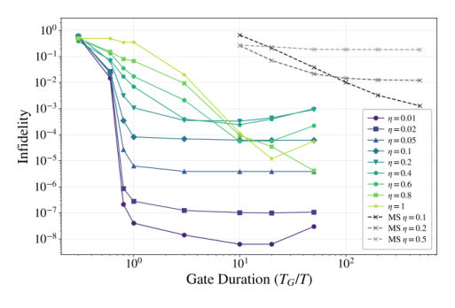
<figcaption class="paper-figure-caption"><b>Fig 1.</b> FIG. 1. Infidelity of entangling gates resulting from optimized driving as a function of dimensionless gate duration TG/T and the LD parameter η. For sufficiently small values of the LD parameter η, there is a pronounced drop in infidelities for gate durations exceeding one trap period T and a nearly constant infidelity for longer durations. For larger values of η this clear step-like behavior gets washed out, and the increasingly nonlinear behavior of the system dynamics requires longer gate durations for high-fidelity entangling gates. Infidelities of gates realized with Mølmer-Sørensen (MS) driving (Eq. (16)) are depicted for comparison for gate times exceeding 10 trap periods T. The...</figcaption>
</figure>
<figure class="paper-figure-card">
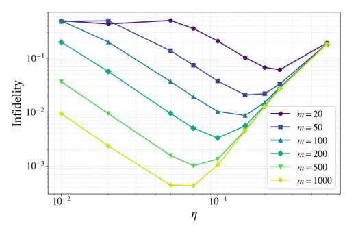
<figcaption class="paper-figure-caption"><b>Fig 2.</b> FIG. 2. Infidelities of entangling gates induced by Eq. (15) with the regular MS drive as a function of the LD parameter η and the dimensionless gate duration TG/T = m as a multiple of the trap period T. This demonstrates that each duration corresponds with a specific optimal η, and this optimal point is lower when gate duration is larger. Below this optimal η, the infidelity increases due to off-resonant effects. The lines connecting data points are a guide to the eye.</figcaption>
</figure>
<figure class="paper-figure-card">
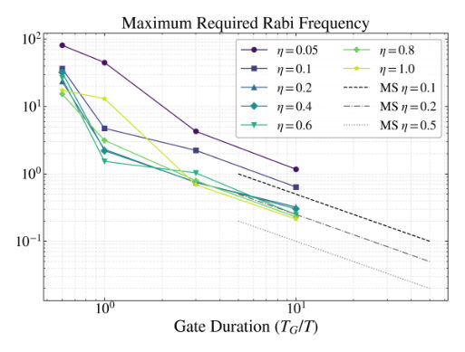
<figcaption class="paper-figure-caption"><b>Fig 3.</b> FIG. 3. Dimensionless maximal value of the Rabi frequency (maxi,t(|Ωi(t)|/ν1)) required by the optimized drives (colored lines) and by the MS scheme (dashed lines) as a function of dimensionless gate duration and the LD parameter η. The dependence of the amplitude of the optimized drives on the duration is qualitatively the same as for the MS drives. The colored lines connecting data points are a guide to the eye, the dashed lines show the analytic dependence.</figcaption>
</figure>
<figure class="paper-figure-card">
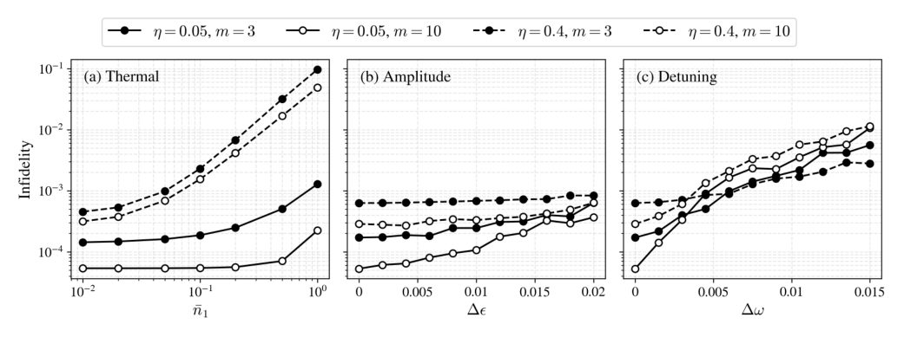
<figcaption class="paper-figure-caption"><b>Fig 4.</b> FIG. 4. (a) Thermal infidelity of gates as defined in Eq. (10) with ∆ϵ = 0 and ∆ω = 0 as a function of the mean thermal occupation ¯n1. The infidelities stay below 10−4 when weak coupling and large duration are used, but they increase faster as temperature increases when strong coupling is used. (b) Ensemble-averaged infidelity (Eq. (14)) as a function of laser intensity noise level ∆ϵ, with ¯n1 = 0 and ∆ω = 0. Infidelities remain below 10−3 for all durations and values of η, across all noise levels tested. (c) Ensemble-averaged infidelity as a function of detuning noise level ∆ω, with ¯n1 = 0 and ∆ϵ = 0. In the noiseless case the slow and weak coupling gate achieves the lowest infidelity,...</figcaption>
</figure>
<figure class="paper-figure-card">
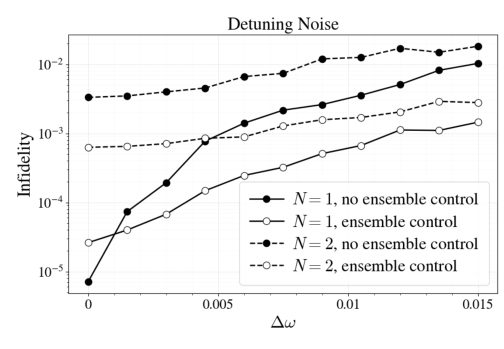
<figcaption class="paper-figure-caption"><b>Fig 5.</b> FIG. 5. Ensemble-averaged infidelity (Eq. (14)) with ¯n1 = 0 and ∆ϵ = 0 when subject to detuning noise with εij cho- sen from [−∆ω, ∆ω]. The LD parameter is η = 0.4 and the gate duration is 3 trap periods. The hollow/filled points cor- respond to gates optimized with/without ensemble control and the solid/dashed lines correspond to gates resulting from optimization targets (Eq. (9)) with the projector specifying one/two lowest energy Fock states. The plot demonstrates that ensemble control can reduce infidelity, but also that us- ing a larger projector for the motional states can increase the infidelity. The lines connecting data points are a guide to the eye.</figcaption>
</figure>
</div>

<p><strong>Summary.</strong> This paper develops optimal control strategies for implementing fast, high-fidelity entangling gates in trapped ion quantum processors. By moving beyond simple harmonic approximations and utilizing anharmonic dynamics, the authors design driving pulses resilient to common noise sources like detuning and temperature variations. This advances the feasibility of building scalable quantum computation hardware based on trapped ions.</p>
<p><strong>Why it may be interesting.</strong> This work directly addresses the practical challenges of scaling quantum computation using trapped ions by providing advanced pulse shaping techniques that explicitly incorporate and mitigate environmental decoherence sources, which is central to modern AMO research.</p>
<details>
<summary>Detailed structure</summary>
<p><strong>Main problem.</strong> The primary goal is designing fast, high-fidelity entangling quantum gates for trapped ions that are robust against environmental noise sources like detuning and temperature fluctuations.</p>
<p><strong>Main result.</strong> Optimal control schemes exploiting anharmonic motional dynamics allow for the realization of high-fidelity gates, showing resilience to noise particularly when the Lamb-Dicke parameter is small.</p>
<p><strong>Method.</strong> The authors employ optimal control techniques (like GRAPE) to find time-dependent driving pulses that minimize gate infidelity while accounting for ensemble averaging over noise distributions.</p>
<p><strong>Model / system.</strong> The system uses trapped ions as qubits, with interactions mediated by collective motional degrees of freedom. The dynamics are governed by a complex Hamiltonian incorporating both qubit and motional terms, moving beyond simple harmonic approximations to include anharmonicity.</p>
<p><strong>Key observables.</strong> Gate fidelity ($F$) and ensemble-averaged infidelity ($ar{I}$), measured as a function of gate duration ($T_G$).</p>
<p><strong>Important parameters / regimes.</strong> Lamb-Dicke parameter ($\eta$), Rabi frequency ($\Omega$), detuning ($\Delta$), and the trap period ($T$).</p>
<p><strong>Assumptions / limitations.</strong> The analysis relies on numerically optimized control schemes, and while anharmonicity is exploited, initial approximations (like those used in standard Mølmer-Sørensen schemes) are shown to be insufficient for high performance.</p>
<p><strong>Figures summary.</strong> Figures compare gate infidelity versus gate duration for different $\eta$, contrast optimized drives against conventional ones, and illustrate the effect of noise averaging on fidelity across various parameter regimes.</p>
<p><strong>Paper structure.</strong> The paper progresses from defining the physical Hamiltonian and identifying limitations in harmonic approximations to formulating the optimal control problem. It then details the use of gradient-based optimization methods (like GRAPE) to design pulses that achieve target unitaries while minimizing infidelity under noise models.</p>
</details>
<details>
<summary>Abstract</summary>
<p>Entangling gates of trapped ions are typically mediated by collective motional degrees of freedom. Weak coupling between qubit and motional degrees of freedom and the resulting harmonic dynamics give access to a broad range of gate schemes, but also impose strict limitations on achievable gate times. In this paper, we devise optimally designed driving schemes for the realization of fast, high-fidelity entangling gates mediated by anharmonic dynamics. The driving can also be optimized to achieve resilience to multiple system imperfections, and the anharmonicity in the motional dynamics can be used to enhance such resilience.</p>
</details>
<p><sub><a href="#top">↑ back to top</a></sub></p>

<p><a id="paper-2607.13342"></a></p>
<h3 id="a-versatile-laser-machined-rf-trap-for-arrays-of-100-ions"><a href="http://arxiv.org/abs/2607.13342v1">A versatile laser-machined rf trap for arrays of 100+ ions</a></h3>
<p><strong>Authors:</strong> Frank G. Schroer, Ilyoung Jung, Thomas W. Burkle, Jack B. Lyons, Joseph W. Van Vlack, Joseph Ezuma, Philip Richerme<br>
<strong>Type:</strong> experiment · <strong>Category:</strong> other · <strong>PDF:</strong> <a href="https://arxiv.org/pdf/2607.13342v1">https://arxiv.org/pdf/2607.13342v1</a><br>
<strong>Analysis basis:</strong> full PDF text, analyzed in chunks
<strong>Topic relevance:</strong> 🔥 <code>analog quantum simulation</code> <strong>4/5</strong> · <code>QC/QI experiment</code> <strong>3/5</strong> · <code>non-equilibrium dynamics</code> <strong>1/5</strong></p>
<div class="figure-strip-hint">↔ Scroll figures horizontally</div>
<div class="paper-figures-scroll">
<figure class="paper-figure-card">
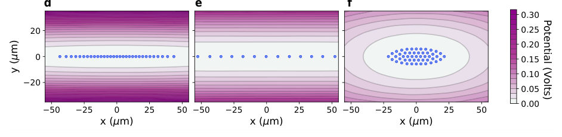
<figcaption class="paper-figure-caption"><b>Fig 1.</b> Figure 1. (a) Exploded CAD assembly showing the trap substrates, mounting system, and electrical connections. (b) Picture of the mounted substrates and electrical connections; (c) Schematic of the central trapping region, showing the electrode geometry and coordinate axes. Voltages are applied to endcap (END), midcap (MID), and center (CTR) electrodes, which alternate with grounded (GND) electrodes. Simulated electrical potentials in the trapping region predict the ability to confine ions in multiple geometries, including (d) long 1D chains, (e) uniformly-spaced 1D strings, and (f) lateral 2D crystals.</figcaption>
</figure>
<figure class="paper-figure-card">
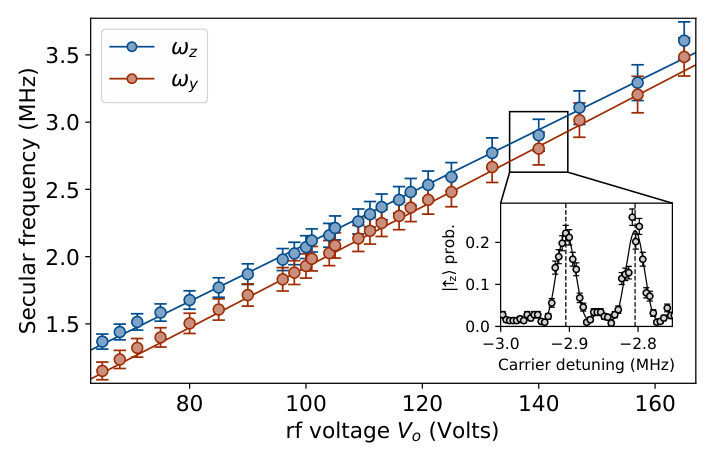
<figcaption class="paper-figure-caption"><b>Fig 2.</b> Figure 2. The radial secular frequencies in the y and z directions show an approximately linear dependence on the applied rf voltage. Solid lines are fits of Eq. 3 to the measured data. The inset shows a typical Raman-driven red sideband scan, from which the radial secular frequencies are extracted.</figcaption>
</figure>
<figure class="paper-figure-card">
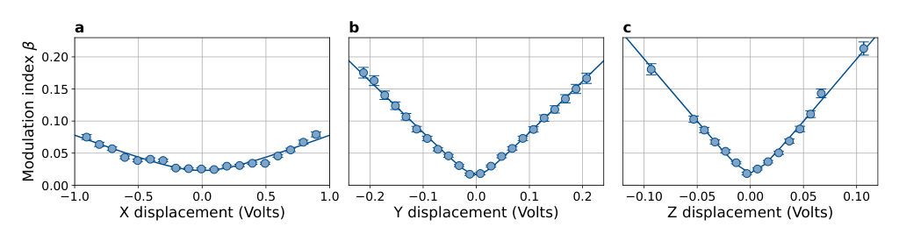
<figcaption class="paper-figure-caption"><b>Fig 3.</b> Figure 3. Micromotion modulation index β measured along the z direction, as a function of displacement voltage applied along the (a) x, (b) y, and (c) z trap axes. Zero displacement corresponds to the trap voltages that minimize the observed micromotion. Displacements are applied by asymmetrically biasing electrodes on opposite sides of the trap. Solid lines are fits to the data that include contributions from both intrinsic and extrinsic micromotion.</figcaption>
</figure>
<figure class="paper-figure-card">
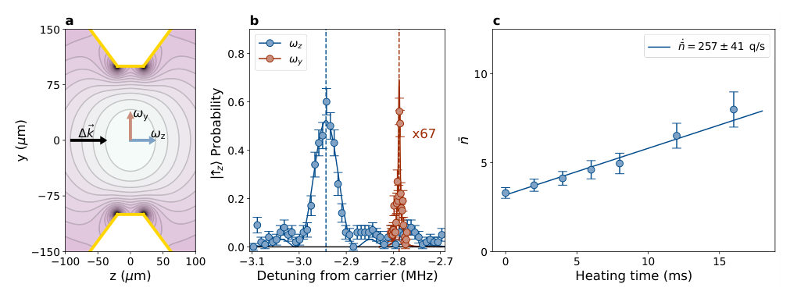
<figcaption class="paper-figure-caption"><b>Fig 4.</b> Figure 4. (a) Simulated trap potentials when the radial principal axes have been rotated to align with the trap coordinate axes. Under these conditions, the wavevector difference ∆⃗k of our Raman beams couples only to the ωz mode. (b) When the principal axes are rotated, the ωz radial mode (blue points) is excited during a Raman red-sideband scan. The ωy mode (red points) is strongly suppressed and requires a 67 times longer Raman pulse duration to achieve similar excitation. (c) When the principal axes are rotated, we measure a center-of-mass heating rate of 257±41 quanta/s for the ωz mode.</figcaption>
</figure>
<figure class="paper-figure-card">
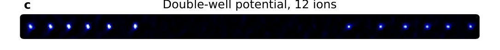
<figcaption class="paper-figure-caption"><b>Fig 5.</b> Figure 5. Ions trapped in different 1D configurations. (a) A 31-ion chain is trapped by keeping the axial confinement weak relative to the radial confinement. (b) Increasing the center electrode voltage produces a chain with near-uniform spacing. (c) Continuing to increase the center electrode voltage generates a symmetric double-well potential, with weak ion-ion interactions across wells.</figcaption>
</figure>
</div>

<p><strong>Summary.</strong> The authors report on the design and experimental realization of a versatile, laser-machined rf Paul trap capable of holding large arrays of ions (100+). By stacking precisely machined fused silica wafers with independently biased electrodes, they achieve unprecedented control over trapping potentials, enabling stable confinement in complex 1D and 2D geometries. This platform significantly advances the hardware required for scaling up quantum simulation experiments using trapped ions.</p>
<p><strong>Why it may be interesting.</strong> This work represents a significant engineering advance in the physical platform for quantum simulation. The ability to precisely engineer trap potentials using macro-scale machining opens up new regimes of control over ion crystal geometry compared to previous traps.</p>
<details>
<summary>Detailed structure</summary>
<p><strong>Main problem.</strong> The development of a versatile, macroscopic radiofrequency (rf) trap capable of confining large arrays of ions in various one-dimensional and two-dimensional geometries for quantum simulation.</p>
<p><strong>Main result.</strong> The fabricated laser-machined trap successfully supports robust confinement for ion crystals exceeding 100 ions, while demonstrating tunable control over trapping potentials, micromotion compensation, and low heating rates.</p>
<p><strong>Method.</strong> The authors utilized precision laser machining of stacked fused silica wafers to create ten independently biased electrodes, allowing precise electrical control over the confining potential.</p>
<p><strong>Model / system.</strong> The system is a macroscopic rf Paul trap designed for trapped ions (specifically $^{171}	ext{Yb}^+$). The trapping potential is modeled using finite-element method (FEM) simulations and analyzed via pseudopotential approximations to predict secular frequencies.</p>
<p><strong>Key observables.</strong> Radial and axial secular frequencies ($\omega_y, \omega_z$), micromotion modulation index ($eta$), motional heating rate ($\dot{ar{n}}$), and the stable geometry of ion arrays (1D chains, 2D crystals).</p>
<p><strong>Important parameters / regimes.</strong> The trap supports confinement for $N \approx 500$ to $1000$ ions; frequencies can exceed $2\pi 	imes 3.5$ MHz; residual micromotion is shown to be $\lesssim 0.02$.</p>
<p><strong>Assumptions / limitations.</strong> The primary limitations are expected to be off-axis micromotion and background gas collisions at room temperature, despite theoretical estimates for very large ion numbers.</p>
<p><strong>Figures summary.</strong> Figures illustrate the trap's CAD assembly (stacked wafers), predicted equilibrium geometries for various configurations (1D/2D), measured secular frequencies versus RF voltage, and measurements of micromotion modulation.</p>
<p><strong>Paper structure.</strong> The paper details the design and fabrication process using laser-machined fused silica. It presents theoretical modeling via FEM and pseudopotential analysis to predict potential shaping. Experimental sections demonstrate trapping capability across various geometries (1D/2D), measure key motional parameters like micromotion and heating rates, and confirm operational stability.</p>
</details>
<details>
<summary>Abstract</summary>
<p>Large ion crystals in diverse geometries are a key resource for quantum simulation experiments. In this work, we introduce a macroscopic rf trap that supports a wide variety of one-dimensional ion configurations as well as lateral two-dimensional crystals with more than 100 ions. Our design is based on precision-machined fused silica wafers that are stacked to form the trap structure. Ten independently biased electrodes provide flexible control over the axial potential, enabling long one-dimensional crystals, isospaced ion strings, split-well chains, and two-dimensional arrays with tunable aspect ratios. We present the design and fabrication process for this trap and demonstrate the ability to tune the radial secular frequencies, detect and compensate micromotion, rotate the principal axes, and characterize trapped ion heating rates. All trap design and documentation files are freely available alongside this work, to facilitate adoption and further development within the ion trap community.</p>
</details>
<p><sub><a href="#top">↑ back to top</a></sub></p>

<p><a id="paper-2607.13635"></a></p>
<h3 id="transverse-order-and-longitudinal-fluctuations-in-a-near-ising-spin-supersolid"><a href="http://arxiv.org/abs/2607.13635v1">Transverse order and longitudinal fluctuations in a near-Ising spin supersolid</a></h3>
<p><strong>Authors:</strong> Mengze Zhu, V. Romerio, S. Raymond, N. Murai, S. Ohira-Kawamura, K. Yu. Povarov, S. A. Zvyagin, R. Sibille, Arianna Minelli, Z. Yan, S. Gvasaliya, A. Zheludev<br>
<strong>Type:</strong> experiment · <strong>Category:</strong> strongly correlated electrons · <strong>PDF:</strong> <a href="https://arxiv.org/pdf/2607.13635v1">https://arxiv.org/pdf/2607.13635v1</a><br>
<strong>Analysis basis:</strong> full PDF text, analyzed in chunks
<strong>Topic relevance:</strong> 🔥 <code>analog quantum simulation</code> <strong>4/5</strong> · <code>exotic spin models in light-matter</code> <strong>3/5</strong> · <code>spintronics-quantum-optics interface</code> <strong>1/5</strong></p>
<div class="figure-strip-hint">↔ Scroll figures horizontally</div>
<div class="paper-figures-scroll">
<figure class="paper-figure-card">
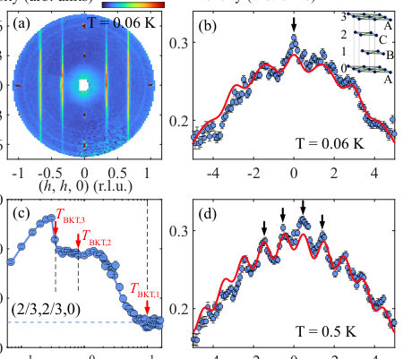
<figcaption class="paper-figure-caption"><b>Fig 1.</b> FIG. 1. (a) Elastic neutron scattering intensity of K2Co(SeO3)2 in the (h, h, l) plane measured at T = 0.06 K using CORELLI. Rod-like magnetic scattering indicates quasi-two-dimensional magnetic order. (b),(d) l scans at Q = (2/3, 2/3, l) measured at T = 0.06 and 0.5 K, respec- tively. Equivalent scans measured at (−2/3, −2/3, l) were av- eraged to improve the counting statistics. Black arrows mark the intensity maxima. Red solid lines are fits described in the text. Inset in (b) illustrates ABC stacking of the triangular- lattice planes. (c) Temperature dependence of the magnetic intensity at Q = (2/3, 2/3, 0) measured using ZEBRA. Red arrows denote the BKT transitions identified from...</figcaption>
</figure>
<figure class="paper-figure-card">
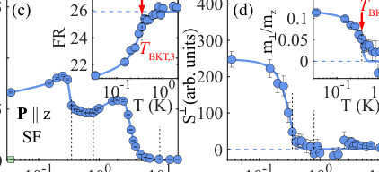
<figcaption class="paper-figure-caption"><b>Fig 2.</b> FIG. 2. Temperature dependence of the magnetic intensity at Q = (1/3, 1/3, 0) measured using polarized neutron diffrac- tion in the (a) non-spin-flip (NSF) and (c) spin-flip (SF) chan- nels. Green squares denote the background measured with the sample rotated by ±7◦. The incident neutron polarization is perpendicular to the horizontal scattering plane (P ∥z). Red arrows and black dashed lines mark the BKT transitions. In- set in (c) shows the flipping ratio (FR) as a function of tem- perature. The pronounced decrease below TBKT,3 signals the emergence of a transverse ordered moment. Blue dashed line indicates its average value between 0.5 and 2 K. (b),(d) Ex- tracted longitudinal and...</figcaption>
</figure>
<figure class="paper-figure-card">
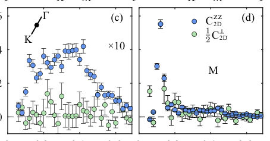
<figcaption class="paper-figure-caption"><b>Fig 3.</b> FIG. 4. (a),(b) Extracted Fourier components of the longitu- dinal and transverse spin-spin correlation function Czz 2D(Q, ω) and C⊥ 2D(Q, ω), in the supersolid phase, demonstrating the predominantly longitudinal character of the excitations. For the measured magnetic spectrum at l = 0, I ∝g2 zzCzz 2D + g2 ⊥ 1 2C⊥ 2D. White hexagon represents the first Brillouin zone boundary. Γ,K and M denote high-symmetry points. Black arrows mark the wave vectors used for the energy-dependent cuts in (c) and (d). (c),(d) Energy dependence of Czz 2D and C⊥ 2D measured midway between the Γ and K points and at the M point, respectively. Note the ×10 intensity scale factor in (c).</figcaption>
</figure>
<figure class="paper-figure-card">
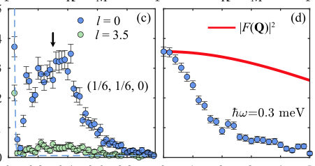
<figcaption class="paper-figure-caption"><b>Fig 4.</b> FIG. 3. False color plots of magnetic excitation spectra of K2Co(SeO3)2 measured by inelastic neutron scattering at T = 0.1 K for (a) l = 0 and (b) l = 3.5. White hexagon outlines the first Brillouin zone boundary. Γ,K and M denote high- symmetry positions in the reciprocal space. Dashed lines in- dicate the wave vector of the constant-Q scans shown in (c). (c) Neutron scattering intensity as a function of energy at Q = (1/6, 1/6, l) for l = 0 and 3.5, respectively. Dashed lines are fits to the elastic peak and a constant background. Black arrow indicates the energy of the l scan shown in (d). (d) Neu- tron scattering intensity as a function of l at Q = (1/6, 1/6, l) for ℏω = 0.3 meV. Red...</figcaption>
</figure>
</div>

<p><strong>Summary.</strong> This work uses polarized neutron scattering to probe the spin supersolid state in a near-Ising antiferromagnet. The research confirms that the supersolid order survives even when strongly anisotropic, revealing that low-energy dynamics are dominated by longitudinal fluctuations rather than transverse ones. This provides crucial experimental data constraining theoretical models of frustrated quantum magnets.</p>
<p><strong>Why it may be interesting.</strong> The finding that low-energy excitations are predominantly longitudinal, contrasting with conventional expectations for such systems, provides stringent constraints on microscopic theoretical models (like XXZ) describing frustrated magnetism and quantum phase transitions.</p>
<details>
<summary>Detailed structure</summary>
<p><strong>Main problem.</strong> The study investigates the nature of transverse order and longitudinal fluctuations within the spin supersolid state of a near-Ising antiferromagnet.</p>
<p><strong>Main result.</strong> The system exhibits evidence for a persistent supersolid ground state in the near-Ising regime, characterized by predominantly longitudinal low-energy spin dynamics despite the presence of a small transverse ordered moment.</p>
<p><strong>Method.</strong> Neutron scattering experiments (both unpolarized and polarized) were used to measure magnetic structure factors and analyze temperature dependence across successive BKT transitions.</p>
<p><strong>Model / system.</strong> The physical system is the S=1/2 triangular-lattice easy-axis antiferromagnet K2Co(SeO3)2, modeled by an XXZ Hamiltonian near the Ising limit.</p>
<p><strong>Key observables.</strong> Longitudinal ($S_{zz}$) and transverse ($S_{\perp}$) ordered moments; low-energy spin fluctuation spectra; flipping ratio (FR); interlayer correlation parameters ($A_{01}, A_{02}, A_{03}$).</p>
<p><strong>Important parameters / regimes.</strong> Near-Ising regime, $T \approx 0.35	ext{ K}$ (for transverse order onset), and the small ratio of transverse to longitudinal moment ($\sim 11\%$ or $\sim 32\%$).</p>
<p><strong>Assumptions / limitations.</strong> The analysis relies on separating spin correlations into longitudinal and transverse components using polarized neutron scattering techniques.</p>
<p><strong>Figures summary.</strong> Figures show temperature dependence of magnetic intensity (NSF/SF channels) highlighting transitions, and plots of the flipping ratio (FR) showing changes below $ ext{TBKT},3$. Other figures detail spectral weight suppression in inelastic measurements.</p>
<p><strong>Paper structure.</strong> The paper systematically analyzes the development of supersolid order through successive BKT transitions using polarized neutron scattering to quantify longitudinal vs. transverse moments, followed by detailed analysis of low-energy spin dynamics.</p>
</details>
<details>
<summary>Abstract</summary>
<p>We investigate the polarization of the ordered moments and low-energy spin fluctuations in the spin supersolid state of the S = 1/2 triangular-lattice easy-axis antiferromagnet K2Co(SeO3)2 using neutron scattering. The supersolid order develops through successive BKT transitions: the longitudinal order appears at higher temperature, while the transverse component associated with the Bose-Einstein condensate emerges only below a lower-temperature transition accompanied by a change in the interlayer correlations. At the lowest measured temperature, the transverse ordered moment reaches only 11% of the longitudinal component. Moreover, the low-energy spin fluctuations are found to be predominantly longitudinal in character. These results provide direct evidence that the supersolid ground state survives even in the near-Ising regime and exhibits longitudinal low-energy dynamics, imposing stringent constraints on microscopic theories of triangular-lattice XXZ antiferromagnets.</p>
</details>
<p><sub><a href="#top">↑ back to top</a></sub></p>

<p><a id="paper-2607.13807"></a></p>
<h3 id="fractional-chern-insulators-in-alternating-twisted-multilayer-motemath209math"><a href="http://arxiv.org/abs/2607.13807v1">Fractional Chern insulators in alternating twisted multilayer MoTe$_{2}$</a></h3>
<p><strong>Authors:</strong> Xi-Hang Feng, Shi-Ping Ding, Xiang-Jian Hou, Ying-Hai Wu, Jin-Hua Gao<br>
<strong>Type:</strong> theory · <strong>Category:</strong> strongly correlated electrons · <strong>PDF:</strong> <a href="https://arxiv.org/pdf/2607.13807v1">https://arxiv.org/pdf/2607.13807v1</a><br>
<strong>Analysis basis:</strong> full PDF text, analyzed in chunks
<strong>Topic relevance:</strong> 🔥 <code>analog quantum simulation</code> <strong>4/5</strong> · <code>correlated cavity matter</code> <strong>1/5</strong> · <code>entanglement &amp; information structure</code> <strong>1/5</strong> · <code>non-equilibrium dynamics</code> <strong>1/5</strong></p>
<div class="figure-strip-hint">↔ Scroll figures horizontally</div>
<div class="paper-figures-scroll">
<figure class="paper-figure-card">
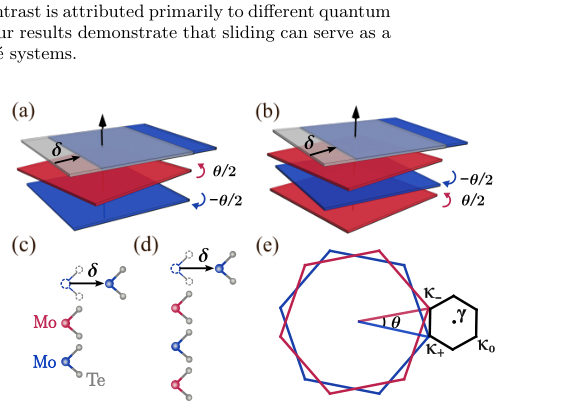
<figcaption class="paper-figure-caption"><b>Fig 1.</b> FIG. 1. (a,b) Schematics of alternating twisted trilayer and tetrlayer MoTe2 in which the first layers are slid by δ. (c,d) Atomic side views of untwisted trilayer and tetralayer MoTe2 with first layers slid. (e) Schematics of the Brillouin zones of individual layers and the moir´e Brillouin zone.</figcaption>
</figure>
<figure class="paper-figure-card">
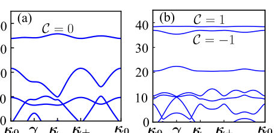
<figcaption class="paper-figure-caption"><b>Fig 2.</b> FIG. 2. Typical band structures of alternating twisted mul- tilayer MoTe2. (a) AT3L system with twist angle 2.15◦; (b) AT4L system with twist angle 2.0◦.</figcaption>
</figure>
<figure class="paper-figure-card">
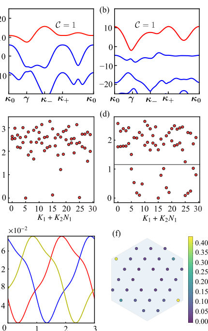
<figcaption class="paper-figure-caption"><b>Fig 3.</b> FIG. 3. (a,b) Band structures of AT3L MoTe2 with θ = 3.0◦, D = 10 meV, and (a) δ = 0 (b) δ = 0.5a1. (c) Many-body energy spectra at 1/3 filling of the topmost band in (a). (d) The same plot as in (c) but for the topmost band in (b). The number of electrons is 10 and the numbers of moi´e cells are 5 and 6. (e) Spectral flow of the three quasi-degenerate ground states in (c) versus the boundary twist angle along the y direction. (f) Static structure factor corresponding to (d).</figcaption>
</figure>
<figure class="paper-figure-card">
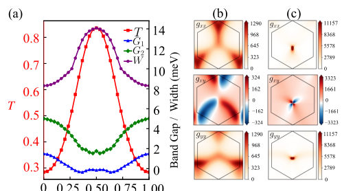
<figcaption class="paper-figure-caption"><b>Fig 4.</b> FIG. 4. (a) Evolution of the trace condition T, band width W, indirect band gap G1, and direct band gap G2 with the sliding distance δ when the electric potential is fixed at D = 10 meV. (b,c) Fubini-Study metric of AT3L MoTe2 with θ = 3.0◦, D = 10 meV, and (b) δ = 0 (c) δ = 0.5a1.</figcaption>
</figure>
<figure class="paper-figure-card">
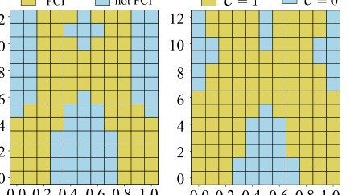
<figcaption class="paper-figure-caption"><b>Fig 5.</b> FIG. 5. Phase diagram of AT4L MoTe2 with θ = 2.5◦at filling factor 1/3. Numerical calculations were performed at many different combinations of electric potential D and slid- ing distance δ. The number of electrons is 8 and the numbers of moir´e cells are 4 and 6. FCIs are identified based on ground state degeneracy and spectral flow under flux insertion.</figcaption>
</figure>
</div>

<p><strong>Summary.</strong> This work explores Fractional Chern Insulators in twisted multilayer MoTe2 by tuning parameters like layer sliding distance and electric fields. The key finding is that the stability of these highly correlated topological states depends critically on the system's underlying quantum geometry, quantified by a specific trace condition. This establishes sliding as an effective knob for controlling exotic many-body phases.</p>
<p><strong>Why it may be interesting.</strong> The explicit connection between geometric properties (quantum geometry/trace condition) and the stabilization/destruction of exotic correlated topological phases like FCIs provides a powerful, measurable diagnostic tool applicable to moiré heterostructures relevant to quantum simulation.</p>
<details>
<summary>Detailed structure</summary>
<p><strong>Main problem.</strong> The study investigates strongly correlated many-body states, specifically Fractional Chern Insulators (FCIs), in alternating twisted multilayer MoTe2.</p>
<p><strong>Main result.</strong> FCIs are found to be stabilized only in specific parameter regimes, a contrast explained by the quantum geometry quantified by the trace condition, which can destroy FCI phases even when bands are topological.</p>
<p><strong>Method.</strong> The research employs numerical calculations involving exact diagonalization of the many-body Hamiltonian projected onto the topmost hole band.</p>
<p><strong>Model / system.</strong> The system is modeled using alternating twisted trilayer (AT3L) and tetralayer (AT4L) MoTe2 moiré systems, incorporating kinetic energy, interlayer tunneling, and an external perpendicular electric field.</p>
<p><strong>Key observables.</strong> Chern number, quantum geometric metrics (Fubini-Study metric), the trace condition (T), bandwidth (W), and various energy gaps ($G_1, G_2$).</p>
<p><strong>Important parameters / regimes.</strong> Sliding distance ($\delta$) of the top layer relative to others, perpendicular electric field strength ($D$), and twist angle ($ heta$).</p>
<p><strong>Assumptions / limitations.</strong> Electrons are assumed to be spin-valley polarized; a continuum model is used for low-energy description.</p>
<p><strong>Figures summary.</strong> Figures illustrate band structures (Fig. 2), the evolution of diagnostic quantities like the trace condition and gaps with sliding distance $\delta$ (Fig. 4), and phase diagrams showing FCI vs CDW regimes based on applied fields (Fig. 5).</p>
<p><strong>Paper structure.</strong> The paper systematically analyzes the system by first establishing the Hamiltonian, then calculating band structures and quantum geometry metrics as a function of tunable parameters ($\delta$, $D$), culminating in identifying the trace condition as the key discriminator for FCI stability.</p>
</details>
<details>
<summary>Abstract</summary>
<p>We study strongly correlated many-body states in alternating twisted trilayer and tetralayer MoTe$_{2}$. By sliding the top layer with respect to others and applying a perpendicular electric field, a variety of band structures can be realized. In many cases, the topmost hole band has unity Chern number and its quantum geometric properties can be tuned to some extent. Exact diagonalizations suggest that fractional Chern insulators are stabilized in certain parameter regimes but not in some regimes even when the band is topological. This contrast is attributed primarily to different quantum geometries as quantified by the trace condition. Our results demonstrate that sliding can serve as a useful knob for probing many-body states in moiré systems.</p>
</details>
<p><sub><a href="#top">↑ back to top</a></sub></p>

<p><a id="paper-2607.13215"></a></p>
<h3 id="a-fibre-integrated-spdc-heralded-single-photon-source-using-zn-indiffused-ppln-ridge-waveguides-at-telecom-wavelengths"><a href="http://arxiv.org/abs/2607.13215v1">A Fibre-Integrated SPDC Heralded Single-Photon Source Using Zn-Indiffused PPLN Ridge Waveguides at Telecom Wavelengths</a></h3>
<p><strong>Authors:</strong> Peter Iveson, Paolo L. Mennea, Goronwy Tawy, Rex H. S. Bannerman, Noe Palomar-Davidson, Lewis D. Wright, Patrick M. Ledingham, Peter G. R. Smith, James C. Gates, Corin B. E. Gawith<br>
<strong>Type:</strong> experiment · <strong>Category:</strong> quantum information and computing · <strong>PDF:</strong> <a href="https://arxiv.org/pdf/2607.13215v1">https://arxiv.org/pdf/2607.13215v1</a><br>
<strong>Analysis basis:</strong> full PDF text, analyzed in chunks
<strong>Topic relevance:</strong> 🔥 <code>quantum optics experiment</code> <strong>4/5</strong> · <code>QC/QI experiment</code> <strong>1/5</strong> · <code>interference shaping light</code> <strong>1/5</strong></p>
<div class="figure-strip-hint">↔ Scroll figures horizontally</div>
<div class="paper-figures-scroll">
<figure class="paper-figure-card">
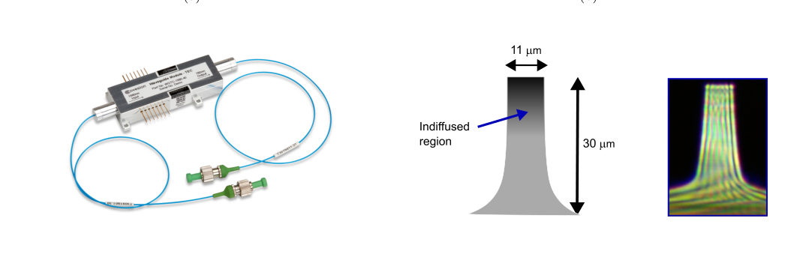
<figcaption class="paper-figure-caption"><b>Fig 1.</b> FIG. 1: (a) Covesion Ltd. fibre-pigtailed waveguide module (Figure courtesy of Covesion Ltd.). (b) Left: Schematic of a Zn-indiffused ridge waveguide. Right: Micrograph of representative diced ridge facet</figcaption>
</figure>
<figure class="paper-figure-card">
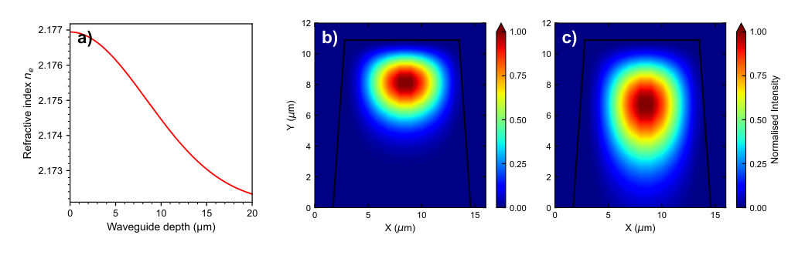
<figcaption class="paper-figure-caption"><b>Fig 2.</b> FIG. 2: Mode analysis. (a) Theoretical extraordinary index contrast profile ∆ne(x) at 780 nm. (b) Simulated TM00 at 780 nm. (c) Simulated TM00 at 1560 nm.</figcaption>
</figure>
<figure class="paper-figure-card">
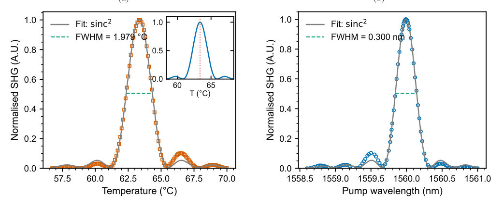
<figcaption class="paper-figure-caption"><b>Fig 3.</b> FIG. 3: SHG characterisation. (a) Temperature acceptance near λ ≈1560 nm. Fits give λ0 = 1559.933 nm, FWHMλ = 0.300 nm and T0 = 63.338 ◦C, FWHMT = 1.979 ◦C. (b) Wavelength acceptance at T ≈63.34 ◦C: markers, data; grey, sinc2 fit; green dashed, FWHM segment.</figcaption>
</figure>
<figure class="paper-figure-card">
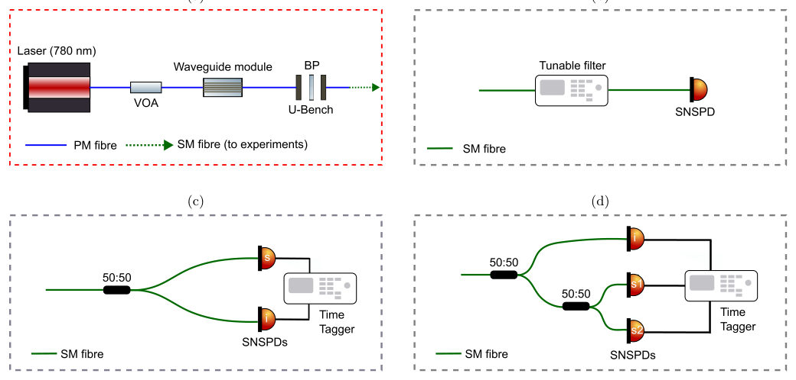
<figcaption class="paper-figure-caption"><b>Fig 4.</b> FIG. 4: Overview of the SPDC configurations. (a) Type-0 SPDC generation in a fiberised ridge waveguide, the output from which is measured via the following three configurations. (b) Spectral characterisation with a tunable filter. (c) CAR, generated pair rate, and Klyshko efficiency via a 50:50 fibre splitter. (d) Heralded g(2)(0) with two cascaded 50:50 splitters. PM: polarisation-maintaining; SM: single-mode; BP: band-pass; VOA: variable optical attenuator i: idler; s: signal.</figcaption>
</figure>
<figure class="paper-figure-card">
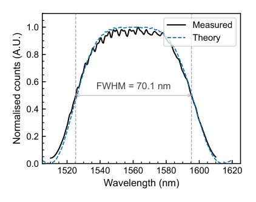
<figcaption class="paper-figure-caption"><b>Fig 5.</b> FIG. 5: Measured and numerically modelled SPDC marginal spectra, normalised to their respective maxima. The theoretical curve is obtained from the phase-matching function using wavelength-dependent effective indices from the FIMMWAVE model. Close agreement is observed in the full-width at half-maximum.</figcaption>
</figure>
</div>

<p><strong>Summary.</strong> The authors report on a high-performance, fibre-integrated single-photon source utilizing Zn-indiffused PPLN waveguides pumped via degenerate SPDC. The system demonstrates excellent purity and brightness across telecom wavelengths, establishing it as a robust platform for wavelength-multiplexed quantum networking applications.</p>
<p><strong>Why it may be interesting.</strong> This work directly addresses quantum networking hardware by demonstrating a highly efficient, broadband, integrated photonics source, which is crucial for scalable quantum communication protocols.</p>
<details>
<summary>Detailed structure</summary>
<p><strong>Main problem.</strong> To characterize a fibre-integrated heralded single-photon source based on spontaneous parametric down-conversion (SPDC) using Zn-indiffused PPLN ridge waveguides at telecom wavelengths.</p>
<p><strong>Main result.</strong> The source achieved high performance metrics, including an absolute brightness of $9.1	imes 10^{9}$ pairs/(s mW), a low heralded second-order correlation ($g_{	ext{h}}^{(2)}(0) \approx 5.53	imes 10^{-4}$), and a competitive internal heralding efficiency of $(58 \pm 5)\%$.</p>
<p><strong>Method.</strong> The characterization involved measuring the broadband spectrum, quantifying pair correlations using the coincidences-to-accidentals ratio (CAR), and calculating the heralded second-order correlation function.</p>
<p><strong>Model / system.</strong> The physical system is a fibre-pigtailed MgO:PPLN ridge waveguide module operating in Type-0 degenerate SPDC. The analysis utilized numerical modeling via a fully vectorial optical mode solver (FIMMWAVE) to predict theoretical pair generation rates and modal profiles.</p>
<p><strong>Key observables.</strong> Absolute brightness ($9.1	imes 10^{9}$ pairs/(s mW)), internal heralding efficiency ($(58 \pm 5)\%$), coincidences-to-accidentals ratio ($> 9	imes 10^4$), and heralded second-order correlation ($g_{	ext{h}}^{(2)}(0) = (5.53 \pm 0.46)	imes 10^{-4}$).</p>
<p><strong>Important parameters / regimes.</strong> Broadband emission spanning $\approx 70 	ext{ nm}$ across the C- and L-bands; theoretical pair generation rate ($  ext{R}_{    ext{SPDC}}/ ext{P}$) $\approx 2.7 	imes 10^{10}$ pairs $    ext{s}^{-1}     ext{mW}^{-1}$.</p>
<p><strong>Assumptions / limitations.</strong> The reported performance metrics are based on a comprehensive characterization that accounts for optical losses and the specific waveguide structure.</p>
<p><strong>Figures summary.</strong> Figures illustrate the fibre-pigtailed module, schematic of the Zn-indiffused ridge waveguide, mode analysis showing index contrast profiles at different wavelengths, and experimental setups for SPDC generation and bandwidth measurement.</p>
<p><strong>Paper structure.</strong> The paper progresses by first reporting initial source performance metrics, followed by detailed characterization of the waveguide structure and mode modeling (including SHG measurements), culminating in the description of the full experimental SPDC measurement process to validate theoretical limits.</p>
</details>
<details>
<summary>Abstract</summary>
<p>We report a fibre-integrated heralded single-photon source based on a commercial Zn-indiffused MgO:PPLN ridge waveguide operated in Type-0 degenerate spontaneous parametric down-conversion (SPDC). The device emits a broadband spectrum spanning approximately 70 nm across the telecom C-and L-bands, with an absolute brightness of $9.1\times 10^{9}$ pairs/(s mW). After accounting for optical losses, we determine an internal heralding efficiency of 58(5)%. The source maintains high purity, exhibiting a coincidences-to-accidentals ratio exceeding $9\times 10^{4}$ and a heralded second-order correlation of $g_{\text{h}}^{(2)}(0) = (5.53 \pm 0.46)\times 10^{-4}$. Low multi-photon noise and broadband emission demonstrate the viability of such platforms for wavelength-multiplexed quantum networking.</p>
</details>
<p><sub><a href="#top">↑ back to top</a></sub></p>

<p><a id="paper-2607.13834"></a></p>
<h3 id="wireless-millikelvin-interconnects-for-superconducting-quantum-hardware"><a href="http://arxiv.org/abs/2607.13834v1">Wireless millikelvin interconnects for superconducting quantum hardware</a></h3>
<p><strong>Authors:</strong> Kristopher Barr, Mingyan Zhong, Euan Parry, Manoj Stanley, Qusay Al-Taai, Paniz Foshat, Kaveh Delfanazari, Martin Weides, Nick M. Ridler, Chong Li, Alessandro Rossi<br>
<strong>Type:</strong> experiment · <strong>Category:</strong> quantum information and computing · <strong>PDF:</strong> <a href="https://arxiv.org/pdf/2607.13834v1">https://arxiv.org/pdf/2607.13834v1</a><br>
<strong>Analysis basis:</strong> full PDF text, analyzed in chunks
<strong>Topic relevance:</strong> 🔥 <code>QC/QI experiment</code> <strong>4/5</strong> · <code>interference shaping light</code> <strong>1/5</strong> · <code>quantum optics experiment</code> <strong>1/5</strong></p>
<div class="figure-strip-hint">↔ Scroll figures horizontally</div>
<div class="paper-figures-scroll">
<figure class="paper-figure-card">
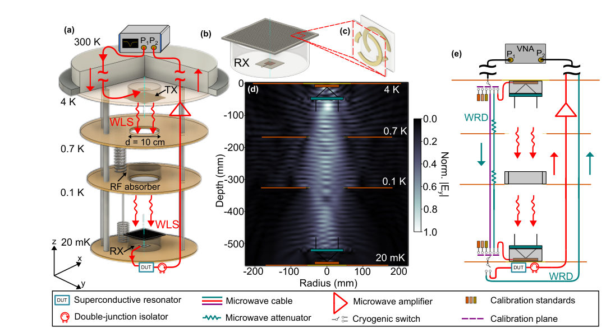
<figcaption class="paper-figure-caption"><b>Fig 1.</b> Figure 1. (a) Schematic diagram of the WLS excitation link inside a dilution refrigerator (50 K stage is omitted for clarity). Shaded cylinders indicate radiation absorbers used to attenuate reverberant signals. (b) RX module composed of a patch antenna and a flat metalens, the absorber attenuates the signal that is not transmitted through the metalens. (c) Zoom-in detail of the DSRR metalens pattern (front and back sides) flipped across the y = -x axis. (d) Simulations of the y-polarized electric field, Ey, propagating within the cryostat chamber. The TX metalens collimate the signal through the apertures, whereas the RX metalens refocuses it on the MXC antenna. (e) Schematic diagram of...</figcaption>
</figure>
<figure class="paper-figure-card">
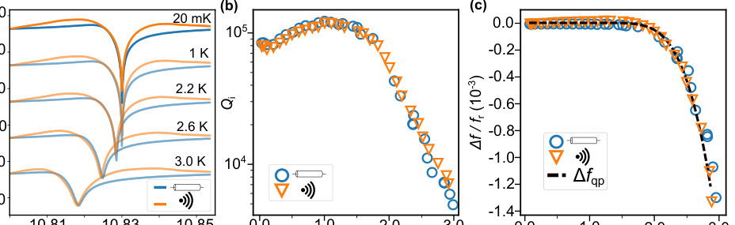
<figcaption class="paper-figure-caption"><b>Fig 2.</b> Figure 2. (a) Transmission coefficient as a function of frequency for different MXC temperatures in WLS (orange) and WRD (blue) excitation mode. Each pair of isothermal traces has been shifted vertically by multiples of 20 dB for clarity. (b) Qi as a function of temperature extracted in the WLS (triangle) and WRD (circle) mode. (c) Fractional change in resonant frequency as a function of temperature in WLS (triangle) and WRD (circle) mode. The dashed line indicates the expected temperature dependence contribution arising from quasi-particles excitation, ∆fqp (see also Appendix D).</figcaption>
</figure>
<figure class="paper-figure-card">
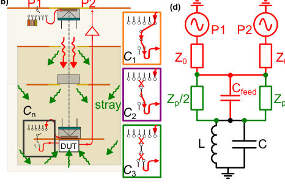
<figcaption class="paper-figure-caption"><b>Fig 3.</b> Figure 3. (a) QL as a function of temperature for WLS (tri- angles) and WRD (circles) configurations. (b) Illustration of pathways of stray radiation (green arrows) and intended line- of-sight path (red arrows) within the cryostat. The switches enclosed in the black rectangle at the MXC stage are used in three alternative configurations [C1, C2, C3] shown on the right and color coded according to the measured transmis- sion signal. (c) DUT transmission coefficient as a function of frequency for three configurations of the cryogenic switches: intended WLS link C1 (orange), single broken link C2 (pur- ple) and double broken link C3 (green). (d) Equivalent circuit model including the intended...</figcaption>
</figure>
<figure class="paper-figure-card">
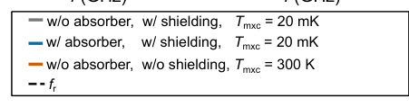
<figcaption class="paper-figure-caption"><b>Fig 4.</b> Figure 4. (a) Top: schematic diagram of the meander res- onator device used as DUT and routing that bypasses it. Bot- tom: Calibrated |S21| measurements at 20 mK as a function of frequency with (blue) and without (gray) RF absorbers in the refrigerator. Room temperature unshielded data is shown in orange. The vertical dashed line highlights the frequency fr used for characterizing the DUT response. (b) Top: schematic diagram of the meander resonator device used as DUT and routing through it. Bottom: |S21| measurements as a function of frequency with (blue) and without (gray) RF absorbers.</figcaption>
</figure>
<figure class="paper-figure-card">
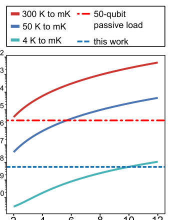
<figcaption class="paper-figure-caption"><b>Fig 5.</b> Figure 5. Radiative heat load incident on the MXC stage as a function of aperture diameter for radiation propagating through the line of sight from RT stage (red solid trace), PT1 stage (blue solid trace), and PT2 stage (cyan solid trace). The blue dashed line indicates the radiated power expected for our experiments. The red dashed line shows the passive heat load of the WRD 50-qubit set-up reported in Ref. [2].</figcaption>
</figure>
</div>

<p><strong>Summary.</strong> This paper demonstrates that wireless microwave interconnects can successfully excite superconducting resonators at millikelvin temperatures, offering a path to overcome wiring density limitations in quantum computing. By comparing results to traditional wired links, the authors validate the feasibility of free-space coupling while also characterizing unavoidable parasitic losses from stray radiation within the cryostat. The findings establish critical design guidelines for integrating wireless components into future scalable quantum hardware.</p>
<p><strong>Why it may be interesting.</strong> This work directly addresses the physical engineering challenges of scaling quantum processors by providing empirical data on microwave coupling in extreme cryogenic environments, which is crucial for building large quantum systems.</p>
<details>
<summary>Detailed structure</summary>
<p><strong>Main problem.</strong> Scalability of quantum computing is bottlenecked by dense electrical interconnects, necessitating a reliable wireless link solution for cryogenic hardware.</p>
<p><strong>Main result.</strong> Wireless excitation preserves the intrinsic superconducting resonator response compared to wired links, establishing a framework for co-designing such interconnects despite residual stray radiation losses.</p>
<p><strong>Method.</strong> The authors experimentally compare microwave resonator characterization using both direct wiring and free-space wireless coupling within a dilution refrigerator environment.</p>
<p><strong>Model / system.</strong> The system involves superconducting microwave resonators (DUT) patterned on NbN film, measured at millikelvin temperatures. The interconnect uses planar antennas and metalens optics to guide microwaves through cryostat apertures.</p>
<p><strong>Key observables.</strong> Resonant frequency ($f_r$), internal quality factor ($Q_i$), transmission coefficient ($   ext{|S}_{21}|$), and temperature dependence of these parameters.</p>
<p><strong>Important parameters / regimes.</strong> Operating temperatures ranging from $20 	ext{ mK}$ to $3.0 	ext{ K}$; input power in the few-photon regime (approx. $-116 	ext{ dBm}$).</p>
<p><strong>Assumptions / limitations.</strong> The study assumes that wireless coupling can be engineered to match the intrinsic response of superconducting hardware, though residual stray radiation remains a challenge.</p>
<p><strong>Figures summary.</strong> Figures show schematic setups for wireless links, $    ext{|S}_{21}|$ spectra comparing wired vs. wireless modes across temperatures, and analyses detailing stray loss mechanisms and the effect of RF absorbers on signal quality.</p>
<p><strong>Paper structure.</strong> The paper progresses from identifying the interconnect bottleneck to demonstrating successful wireless excitation, characterizing the resulting losses (stray radiation), and finally proposing a co-design framework incorporating packaging and material science solutions.</p>
</details>
<details>
<summary>Abstract</summary>
<p>Scalable quantum computing is limited by the dense network of electrical interconnects linking cryogenic quantum processors to room-temperature control electronics. To overcome this bottleneck, considerable effort has focused on cryogenic CMOS electronics and microwave-to-optical transduction, aiming to reduce wiring complexity and thermal loading. Wireless interconnects have recently emerged as a promising complementary approach, yet their compatibility with superconducting quantum hardware remains largely unexplored. Here, we demonstrate the wireless excitation of a superconducting microwave resonator of the type routinely employed for qubit readout, operating at millikelvin temperatures inside a dilution refrigerator. By directly comparing wired and wireless operation within the same cryogenic environment, we show that wireless coupling preserves the intrinsic resonator response while revealing parasitic electromagnetic pathways arising from stray radiation within the cryostat enclosure. These results establish a framework for the co-design of wireless interconnects, cryogenic packaging and superconducting quantum hardware.</p>
</details>
<p><sub><a href="#top">↑ back to top</a></sub></p>

<p><a id="paper-2607.13980"></a></p>
<h3 id="dipolar-mixtures-in-checker-board-optical-bilayers"><a href="http://arxiv.org/abs/2607.13980v1">Dipolar mixtures in checker-board optical bilayers</a></h3>
<p><strong>Authors:</strong> Rukmani Bai, Luis Santos<br>
<strong>Type:</strong> theory · <strong>Category:</strong> quantum gases · <strong>PDF:</strong> <a href="https://arxiv.org/pdf/2607.13980v1">https://arxiv.org/pdf/2607.13980v1</a><br>
<strong>Analysis basis:</strong> full PDF text, analyzed in chunks
<strong>Topic relevance:</strong> 🔥 <code>analog quantum simulation</code> <strong>4/5</strong> · <code>correlated cavity matter</code> <strong>1/5</strong></p>
<div class="figure-strip-hint">↔ Scroll figures horizontally</div>
<div class="paper-figures-scroll">
<figure class="paper-figure-card">
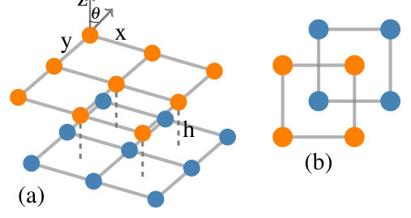
<figcaption class="paper-figure-caption"><b>Fig 1.</b> FIG. 1. (a) Scheme of the considered bilayer square-lattice setup. The layers are separated by a vertical distance h. Each layer is occu- pied by only one of the components. (b) Scheme of the considered 2 × 2 cluster, with 4 sites in each layer, employed in our CGW cal- culations.</figcaption>
</figure>
<figure class="paper-figure-card">
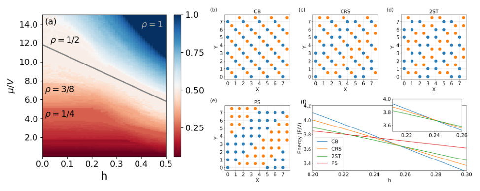
<figcaption class="paper-figure-caption"><b>Fig 2.</b> FIG. 2. (a) Density ρ1,2 = ρ as a function of the interlayer spacing h, and the chemical potential µ. We focus on ρ = 1/2, considering chemical potentials along the solid line. (b) Checker-board (CB) crystal. (c) Intermediate crystalline (CRS) phase. (d) Two-row stripe (2ST) phase; (e) Phase separated (PS) phase: here it is limited due to the 8 × 8 lattice with periodic boundary conditions; larger lattices show the formation of broader domains. (f) Energy of the different crystalline phases in the atomic limit (J = 0) as a function of h. In the inset, we show the energy of the CB, CRS and 2ST phases as a function of h for J/V = 0.2, showing that, also at finite hopping, the three phases...</figcaption>
</figure>
<figure class="paper-figure-card">
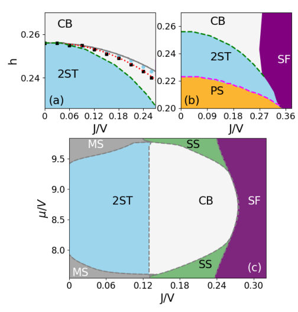
<figcaption class="paper-figure-caption"><b>Fig 3.</b> FIG. 3. (a) CB-2ST transition. The dashed line indicates the CB- 2ST transition as obtained from the second-order perturbation the- ory calculation. As expected, see text, the second-order results with Jeff = 2J (solid curve) match with the CGW calculation for a 2 × 2 lattice (filled circles), whereas the CGW results for a 4 × 2 lattice (filled squares) match with the second-order results using Jeff = 1.6J (dotted curve). This results show both that the second- order perturbation theory is valid at the J values considered, and that CWG cannot be employed to determine the solid-into-solid transi- tions. (b) Phase diagram as a function of the hopping J and the inter- layer separation h,...</figcaption>
</figure>
<figure class="paper-figure-card">
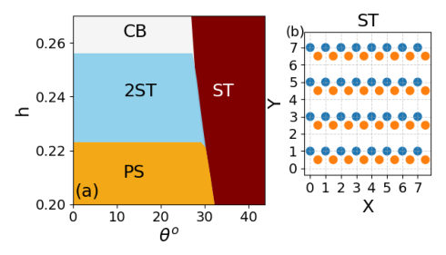
<figcaption class="paper-figure-caption"><b>Fig 4.</b> FIG. 4. (a) Phase diagram in the atomic limit (J = 0) as a function of the dipole orientation θ and the inter-layer spacing h. (b) Stripe (ST) phase characteristic of large-enough angles θ.</figcaption>
</figure>
<figure class="paper-figure-card">
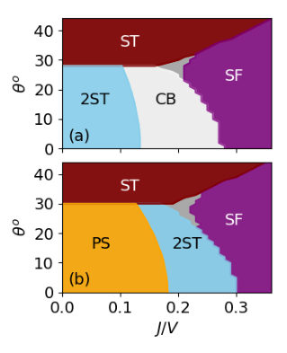
<figcaption class="paper-figure-caption"><b>Fig 5.</b> FIG. 5. Phase diagram as a function of the hopping J and the ori- entation angle θ for h = 0.25 (a) and h = 0.217 (b). Note the solid-into-solid transitions, as well as the significant dependence of the crystal-to-superfluid transition depending on the orientation an- gle. The gray zone indicates amorphous metastable solutions in our CGW calculations.</figcaption>
</figure>
</div>

<p><strong>Summary.</strong> This theoretical study explores the complex quantum phases of ultra-cold dipolar mixtures trapped in checker-board optical bilayers. By analyzing the interplay between long-range dipole interactions and particle hopping, the authors map out multiple crystalline ground states. The key finding is that tunneling can drive solid-into-solid phase transitions between these distinct crystal structures.</p>
<p><strong>Why it may be interesting.</strong> This work directly addresses many-body physics in ultracold atomic systems using dipolar interactions, which is a major frontier in AMO physics. The prediction of super-exchange induced phase transitions provides concrete, testable predictions for optical lattice experiments.</p>
<details>
<summary>Detailed structure</summary>
<p><strong>Main problem.</strong> The study investigates the complex interplay between intra- and inter-component anisotropic long-range interactions within dipolar mixtures.</p>
<p><strong>Main result.</strong> The system exhibits a rich landscape of crystalline phases, including solid-into-solid transitions induced by super-exchange processes as external parameters are varied.</p>
<p><strong>Method.</strong> The research combines second-order perturbation theory with Cluster-Gutzwiller (CGW) calculations to analyze the ground state properties and phase diagrams.</p>
<p><strong>Model / system.</strong> The system models ultra-cold dipolar mixtures confined in separated, checker-board optical bilayers. The physics is governed by an extended Bose-Hubbard Hamiltonian incorporating dipole interactions and hopping terms.</p>
<p><strong>Key observables.</strong> Crystalline phases (Checker-board, Two-row stripe, Intermediate Crystalline, Phase-Separated), phase transition lines, and energy shifts ($\Delta E$).</p>
<p><strong>Important parameters / regimes.</strong> Inter-layer separation ($h$), inter-component interaction strength ($V$), dipole orientation angle ($   heta$), and hopping amplitude ($J$).</p>
<p><strong>Assumptions / limitations.</strong> Assumes equal populations ($\mu_1 = \mu_2$) and uniform on-site interactions ($V_{1,1} = V_{2,2} = V_{1,2} = V$); CGW methods are used for melting transitions while super-exchange is needed for solid-solid ones.</p>
<p><strong>Figures summary.</strong> Figures illustrate the setup (bilayer scheme), phase diagrams showing transitions between CB, 2ST, CRS, and PS phases based on $h$, and how these transitions depend on dipole orientation ($  heta$) and hopping ($J$).</p>
<p><strong>Paper structure.</strong> The paper analyzes the ground state by first establishing the Hamiltonian in the bilayer setup. It then maps out phase diagrams showing transitions (CB $\leftrightarrow$ 2ST $\leftrightarrow$ CRS $\leftrightarrow$ PS) as $h$ changes, followed by analyzing how finite hopping ($J$) induces solid-into-solid transitions.</p>
</details>
<details>
<summary>Abstract</summary>
<p>Ultra-cold dipolar mixtures in component-dependent optical potentials constitute an interesting platform for the study of the interplay between intra- and inter-component anisotropic long-range interactions. We study the particular case of binary dipolar mixtures placed in separated bilayers which are displaced in an anti-magic wavelength configuration. Using a combination of second-order perturbation theory and cluster-Gutzwiller calculations, we unveil a rich landscape of possible crystalline phases for the two components, showing that, interestingly, inter-site hopping may result, via super-exchange, in solid-into-solid transitions between different crystalline phases. These crystalline phases and the corresponding transitions can be experimentally realized using e.g. lanthanide mixtures in optical lattices.</p>
</details>
<p><sub><a href="#top">↑ back to top</a></sub></p>

<p><a id="paper-2607.13325"></a></p>
<h3 id="a-reality-check-on-quantum-optimisation-evidence-from-an-industrial-case-study"><a href="http://arxiv.org/abs/2607.13325v1">A Reality Check on Quantum Optimisation: Evidence from an Industrial Case Study</a></h3>
<p><strong>Authors:</strong> Hila Safi, Karen Wintersperger, Oliver von Sicard, Christoph Niedermeier, Wolfgang Mauerer<br>
<strong>Type:</strong> experiment · <strong>Category:</strong> quantum information and computing · <strong>PDF:</strong> <a href="https://arxiv.org/pdf/2607.13325v1">https://arxiv.org/pdf/2607.13325v1</a><br>
<strong>Analysis basis:</strong> full PDF text, analyzed in chunks
<strong>Topic relevance:</strong> 🔥 <code>QC/QI experiment</code> <strong>4/5</strong></p>
<div class="figure-strip-hint">↔ Scroll figures horizontally</div>
<div class="paper-figures-scroll">
<figure class="paper-figure-card">
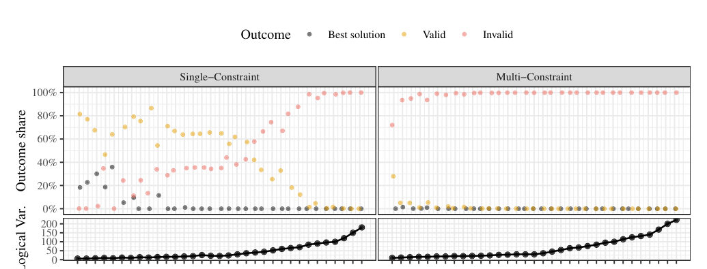
<figcaption class="paper-figure-caption"><b>Fig 1.</b> Fig. 1. Scatter plot of best, valid, and invalid solution shares for the Single-Constraint and Multi-Constraint models on Advantage System 6.4. Problem instances on the x-axis are denoted as (M−R−J) (machines-rigs-jobs). The plots below show the required logical qubits per model, with the Multi-Constraint model exhibiting higher qubit demand due to additional constraints. The y-axis represents the percentage of samples classified as best (black), valid (yellow), or invalid (red).</figcaption>
</figure>
<figure class="paper-figure-card">
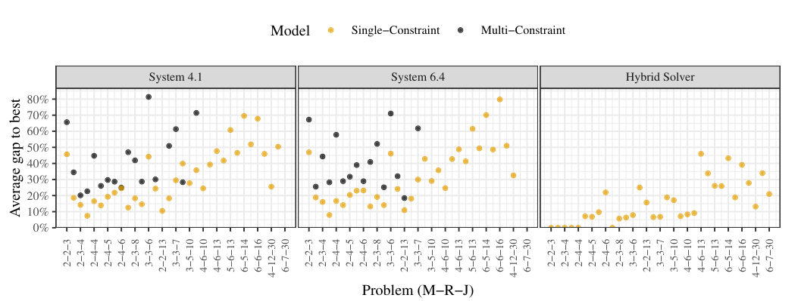
<figcaption class="paper-figure-caption"><b>Fig 2.</b> Fig. 2. Average gap (in %) of all valid solutions relative to the best-known solution (y) for varying instances (x) in form (M−R−J). Panels separate results for Advantage 4.1, Advantage 6.4, and the Hybrid Solver. The x-axis lists all problem instances; invalid and best solutions are excluded.</figcaption>
</figure>
<figure class="paper-figure-card">
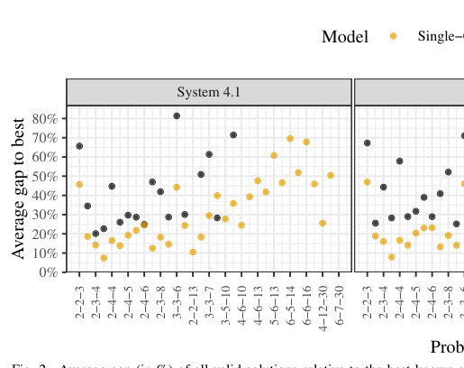
<figcaption class="paper-figure-caption"><b>Fig 3.</b> Figure 5 summarises the results from the Fujitsu Digital Annealer (DA) across the three QUBO implementations de- scribed in Section V-B3. Unlike the quantum devices, the DA supports problem sizes beyond an equivalent of 10,000 logical variables, enabling large-scale experiments for both the Single-Constraint and Multi-Constraint Models. The x- axis shows the number of logical variables, and the y-axis the share of best, valid, and invalid solutions. For the Single- Constraint Model, both the standard BinPol and the sepa- rated BinPol formulation perform consistently well across</figcaption>
</figure>
<figure class="paper-figure-card">
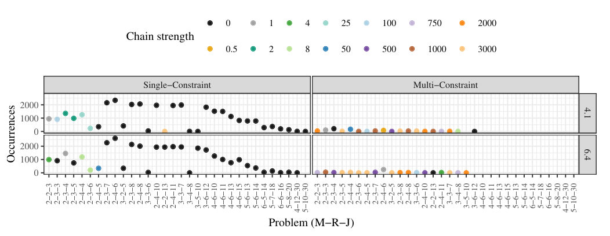
<figcaption class="paper-figure-caption"><b>Fig 4.</b> Fig. 3. Impact of chain strength on the number of valid and best solutions for the Single-Constraint and Multi-Constraint models on Advantage 4.1 and 6.4. The x-axis shows problem instances (M −R−J), the y-axis the number of valid and best samples, and colours denote chain strength (0 = hardware default to 3000).</figcaption>
</figure>
<figure class="paper-figure-card">
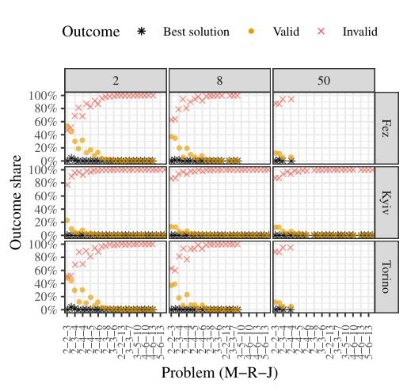
<figcaption class="paper-figure-caption"><b>Fig 5.</b> Fig. 4. QAOA outcome shares on the Eagle (Kiev) and Heron (Fez, Torino) processors. The x-axis shows problem instances (M, R, J), the y-axis the percentage of best, valid, and invalid solutions, and each facet a different QAOA depth.</figcaption>
</figure>
</div>

<p><strong>Summary.</strong> This paper investigates whether current quantum computing platforms can solve real-world industrial scheduling problems by comparing results from quantum, quantum-inspired, and classical methods. The authors conclude that while these techniques are useful for early prototyping and guiding solver selection, achieving high performance requires careful co-design between the problem formulation and the specific hardware architecture used.</p>
<p><strong>Why it may be interesting.</strong> While focused on scheduling, the rigorous comparison of different physical implementations (annealers vs. gate models) and the explicit discussion of hardware constraints provide valuable insights into near-term quantum algorithm implementation challenges relevant to any complex Hamiltonian simulation or optimization task.</p>
<details>
<summary>Detailed structure</summary>
<p><strong>Main problem.</strong> Assessing the practical industrial utility of quantum optimization algorithms for complex combinatorial problems, specifically using an industrial variant of the Job-Shop Scheduling Problem (JSSP).</p>
<p><strong>Main result.</strong> Hardware-software co-design is crucial for achieving good solution quality and scalability; current quantum methods are best suited for supporting solver selection and proof-of-concept development rather than guaranteeing global optimality.</p>
<p><strong>Method.</strong> The study benchmarks quantum, quantum-inspired (e.g., QAOA), and classical solvers against an exact MILP baseline by formulating the scheduling problem as QUBOs.</p>
<p><strong>Model / system.</strong> The system is modeled using formulations for JSSP variants (Single/Multi-Constraint Models) solved on three platforms: IBM Quantum (gate-based), D-Wave Quantum Annealer, and Fujitsu Digital Annealer.</p>
<p><strong>Key observables.</strong> Runtime, solution quality (optimality gap), and scalability across different hardware backends.</p>
<p><strong>Important parameters / regimes.</strong> QUBO size (number of qubits/constraints), time budget for classical solvers, and the specific formulation used (Single vs. Multi-Constraint).</p>
<p><strong>Assumptions / limitations.</strong> The optimal QUBO solution does not guarantee the global optimum because the complex scheduling task is artificially split into assignment and ordering stages.</p>
<p><strong>Figures summary.</strong> Not specified by notes; focus is on comparative benchmarking of performance metrics across platforms.</p>
<p><strong>Paper structure.</strong> The paper systematically compares multiple optimization approaches (quantum, quantum-inspired, classical) applied to a real-world scheduling problem, emphasizing the necessary co-design between formulation and hardware.</p>
</details>
<details>
<summary>Abstract</summary>
<p>Quantum Processing Units promise speed-ups for selected computational problems, including combinatorial optimisation, but their industrial utility remains an open challenge. We study an industrial variant of the Job-Shop Scheduling Problem using quantum, quantum-inspired, and classical methods across three platforms: IBM Quantum, the D-Wave Quantum Annealer, and the Fujitsu Digital Annealer. By tailoring formulations to hardware-specific constraints, we show that hardware-software co-design is essential for solution quality and scalability. We benchmark all approaches against an exact classical solver and a MILP formulation, evaluating runtime, solution quality, and scalability. Our results indicate that quantum and quantum-inspired optimisation can support industrial solver selection, integration in classical workflows, modelling decisions, and early proof-of-concept development, while suggesting a potential path towards improved approximations for industrial scheduling.</p>
</details>
<p><sub><a href="#top">↑ back to top</a></sub></p>

<p><a id="paper-2607.13223"></a></p>
<h3 id="comparing-the-three-w-like-states-with-the-w-state"><a href="http://arxiv.org/abs/2607.13223v1">Comparing the three W-like states with the W state</a></h3>
<p><strong>Authors:</strong> Dafa Li<br>
<strong>Type:</strong> theory · <strong>Category:</strong> quantum information and computing · <strong>PDF:</strong> <a href="https://arxiv.org/pdf/2607.13223v1">https://arxiv.org/pdf/2607.13223v1</a><br>
<strong>Analysis basis:</strong> full PDF text, analyzed in chunks
<strong>Topic relevance:</strong> 🔥 <code>entanglement &amp; information structure</code> <strong>4/5</strong></p>
<div class="figure-strip-hint">↔ Scroll figures horizontally</div>
<div class="paper-figures-scroll">
<figure class="paper-figure-card">
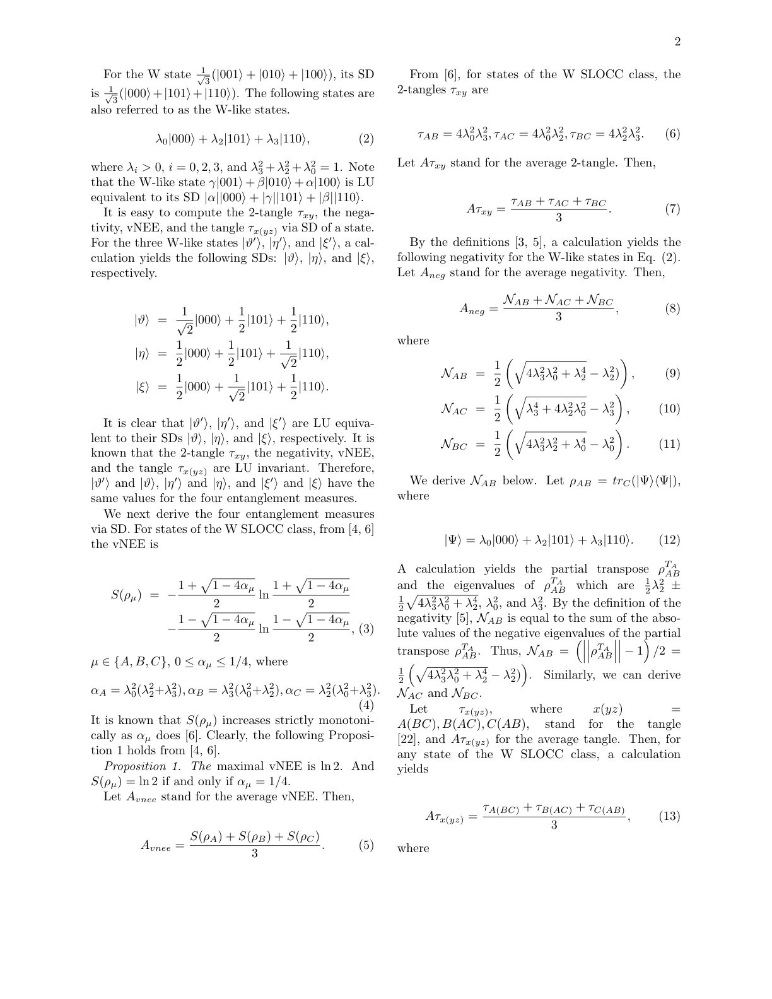
<figcaption class="paper-figure-caption"><b>Fig 1.</b> Low-resolution page preview, page 2</figcaption>
</figure>
<figure class="paper-figure-card">
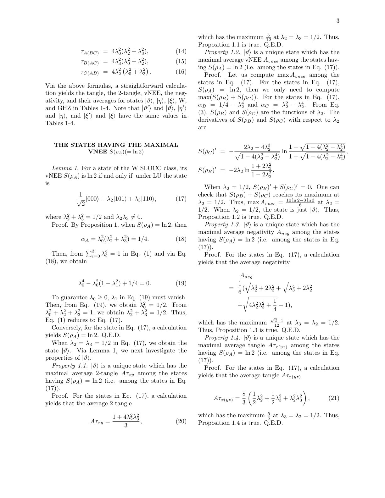
<figcaption class="paper-figure-caption"><b>Fig 2.</b> Low-resolution page preview, page 3</figcaption>
</figure>
<figure class="paper-figure-card">
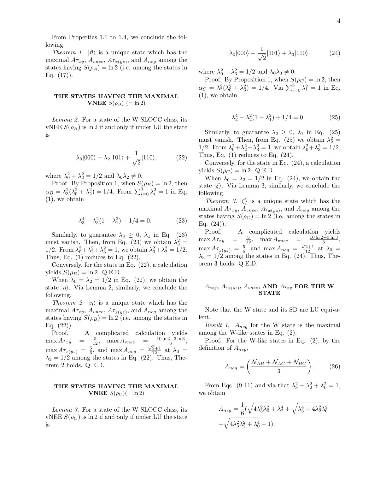
<figcaption class="paper-figure-caption"><b>Fig 3.</b> Low-resolution page preview, page 4</figcaption>
</figure>
<figure class="paper-figure-card">
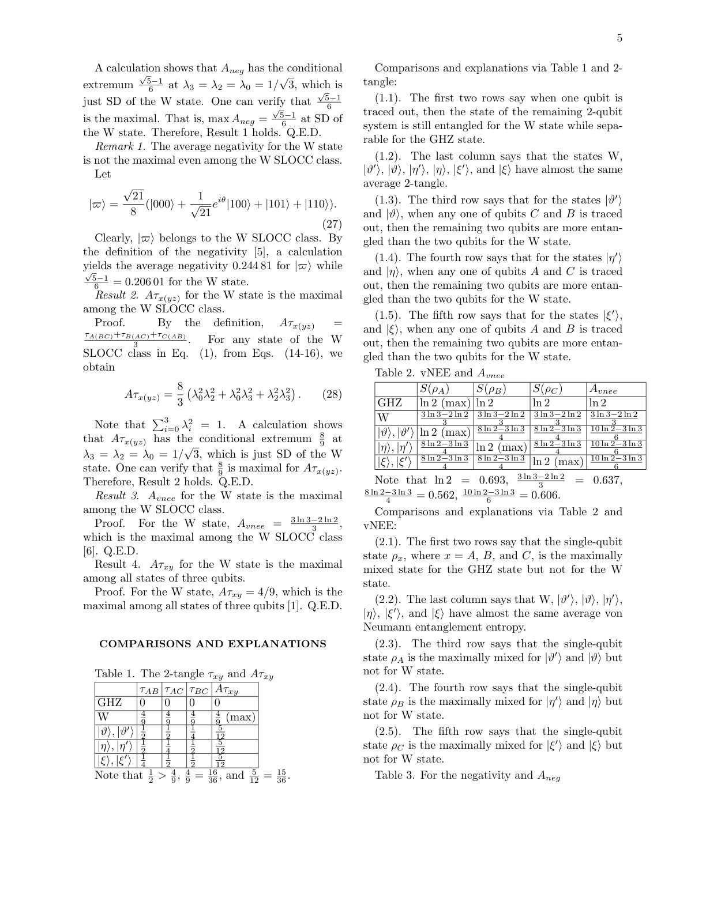
<figcaption class="paper-figure-caption"><b>Fig 4.</b> Low-resolution page preview, page 5</figcaption>
</figure>
<figure class="paper-figure-card">
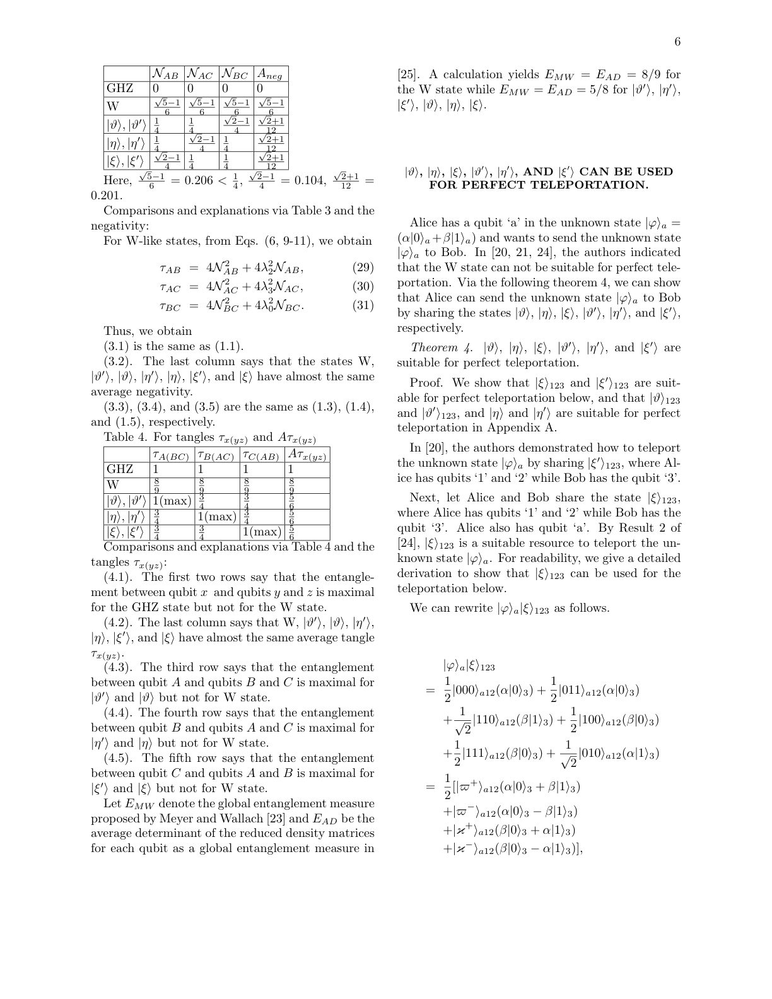
<figcaption class="paper-figure-caption"><b>Fig 5.</b> Low-resolution page preview, page 6</figcaption>
</figure>
</div>

<p><strong>Summary.</strong> This paper rigorously compares three novel W-like quantum states against the standard W state using multiple entanglement measures. It proves mathematically that these new states exhibit superior entanglement properties and robustness against particle loss. Consequently, they are shown to be necessary resources for achieving perfect superdense coding and teleportation protocols.</p>
<p><strong>Why it may be interesting.</strong> This work provides a detailed resource comparison within quantum information theory, identifying optimal entangled states for fundamental protocols like teleportation and dense coding that surpass standard benchmark states.</p>
<details>
<summary>Detailed structure</summary>
<p><strong>Main problem.</strong> The paper compares three specific W-like quantum states ($|\vartheta'
angle, |\eta'
angle, |\xi'
angle$) against the standard W state to determine which is superior for quantum communication tasks.</p>
<p><strong>Main result.</strong> The three W-like states are shown to possess higher entanglement robustness and are suitable resources for perfect teleportation and superdense coding, capabilities that the standard W state lacks.</p>
<p><strong>Method.</strong> The investigation uses rigorous mathematical proofs involving multiple entanglement measures (vNEE, tangle, negativity) derived from Schmidt Decomposition analysis.</p>
<p><strong>Model / system.</strong> The system involves three-qubit quantum states. The comparison is between the general W state and specific parameterized W-like states ($\{|\vartheta
angle, |\eta
angle, |\xi
angle\}$).</p>
<p><strong>Key observables.</strong> Von Neumann entanglement entropy (vNEE), 2-tangle ($   au$), Negativity, and their averages across different qubit subsystems.</p>
<p><strong>Important parameters / regimes.</strong> The condition for maximal vNEE components ($S(
ho_\mu) = \ln 2$) is a key constraint used to define the optimal states.</p>
<p><strong>Assumptions / limitations.</strong> The analysis assumes that the W-like states are LU equivalent to their derived Schmidt Decomposition forms, and it relies on specific local unitary operations for demonstrating protocols.</p>
<p><strong>Figures summary.</strong> Tables compare entanglement measures ($    au_{xy}$, $ ext{A}_{
u nee}$, etc.) across GHZ, W, and the three optimized W-like states; other tables summarize single-qubit entropies and average negativity.</p>
<p><strong>Paper structure.</strong> The paper first establishes necessary conditions for maximal entanglement components. It then proves that specific parameterized states uniquely maximize various entanglement measures compared to the W state. Finally, it demonstrates the practical utility of these optimized states by showing they enable perfect teleportation and superdense coding.</p>
</details>
<details>
<summary>Abstract</summary>
<p>In [Phy. Rev. Lett., 98, 260501 (2007)] and previous papers, the W-like states were used in many quantum communication schemes, distillation, teleportation and superdense coding. So far, no one has compared the W-like states with the W state. We investigate the properties of three W-like states named as $|\vartheta ^{\prime }\rangle $, $|η^{\prime }\rangle $ and $|ξ^{\prime }\rangle $. We point out that $|\vartheta ^{\prime }\rangle $ (resp. $|η^{\prime }\rangle $ and $|ξ^{\prime }\rangle $) has the maximal von Neumann entanglement entropy (vNEE) $S(ρ_{A})=\ln 2$ (resp. $S(ρ_{B})=\ln 2$ and $S(ρ_{C})=\ln 2$) and the maximal tangle $τ_{A(BC)}=1$ (resp. $τ_{B(AC)}=1$ and $τ_{C(AB)}=1$) while the W state does not. We also indicate that if some one of three qubits is traced out, then the remaining two qubits of $|\vartheta ^{\prime }\rangle $ (resp. $|η^{\prime }\rangle $ and $|ξ^{\prime }\rangle $) are more entangled than the two qubits of the W state by several entanglement measures. It means that the three W-like states have higher robustness against some particle loss than the W state. We show that $|\vartheta ^{\prime }\rangle $, $|η^{\prime }\rangle $ and $|ξ^{\prime }\rangle $ can be suitable for perfect teleportation and superdense coding but the W state cannot.</p>
</details>
<p><sub><a href="#top">↑ back to top</a></sub></p>

<p><a id="paper-2607.13957"></a></p>
<h3 id="temporal-fourier-optics-reveals-hidden-hybridized-light-matter-states"><a href="http://arxiv.org/abs/2607.13957v1">Temporal Fourier Optics Reveals Hidden Hybridized Light-Matter States</a></h3>
<p><strong>Authors:</strong> Juan-Feng Zhu, Wenjie Zhou, Shihao Feng, Zicheng Song, Ruicong Zhang, Cheng-Wei Qiu, Rengming Liu, Lin Wu<br>
<strong>Type:</strong> both · <strong>Category:</strong> other · <strong>PDF:</strong> <a href="https://arxiv.org/pdf/2607.13957v1">https://arxiv.org/pdf/2607.13957v1</a><br>
<strong>Analysis basis:</strong> full PDF text, analyzed in chunks
<strong>Topic relevance:</strong> <code>interference shaping light</code> <strong>3/5</strong> · <code>methods for driven-dissipative</code> <strong>3/5</strong> · <code>quantum optics experiment</code> <strong>3/5</strong> · <code>Tavis-Cummings &amp; cavity-many-emitter</code> <strong>2/5</strong> · <code>correlated cavity matter</code> <strong>2/5</strong> · <code>measurement-induced transitions</code> <strong>2/5</strong> · <code>quantum measurements</code> <strong>2/5</strong> · <code>Keldysh / 2PI / non-Gaussian methods</code> <strong>1/5</strong> · <code>analog quantum simulation</code> <strong>1/5</strong> · <code>correlated / nonlocal dissipation</code> <strong>1/5</strong> · <code>driven-dissipative phase transition</code> <strong>1/5</strong> · <code>non-equilibrium dynamics</code> <strong>1/5</strong></p>
<div class="figure-strip-hint">↔ Scroll figures horizontally</div>
<div class="paper-figures-scroll">
<figure class="paper-figure-card">
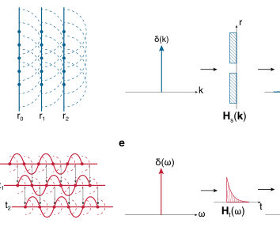
<figcaption class="paper-figure-caption"><b>Fig 1.</b> Fig. 1 Space–time Fourier correspondence underlying temporal Fourier optics. a,d, Conceptual illustration of wave propagation in the spatial and temporal domains. Following the Huygens–Fresnel principle, each point on a spatial wavefront or temporal waveform contributes coher- ently to subsequent propagation, establishing the space–time Fourier correspondence between spatial diffraction and temporal evolution. b,e, Fourier relationship between the impulse response and its corresponding transfer function. In the spatial domain, a finite aperture produces a spatial point- spread function (PSF). Its temporal analogue is the temporal point-spread function (TPSF), arising from effective temporal...</figcaption>
</figure>
<figure class="paper-figure-card">
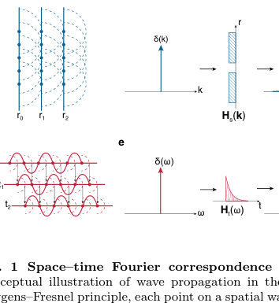
<figcaption class="paper-figure-caption"><b>Fig 2.</b> Figure 1b illustrates the same reconstruction process in Fourier space. An ideal plane wave corresponds to a delta-function distribution in transverse momentum space. After transmission through a finite aperture, the optical field becomes spatially confined and consequently broadens in transverse momentum, producing the famil- iar Fraunhofer diffraction pattern. The resulting far-field response, denoted by Hs(k), characterizes the spatial response of the optical system. For an aperture described by the transmission function us(r), the far-field response under the Fraunhofer con- dition S ≪λL, where S denotes the aperture area, λ is the wavelength, and L is the propagation distance, is given...</figcaption>
</figure>
<figure class="paper-figure-card">
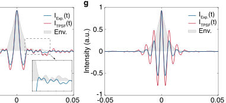
<figcaption class="paper-figure-caption"><b>Fig 3.</b> Fig. 2 Experimental validation of TPSF in deterministic single-molecule plasmon– exciton nanocavities. a, Schematic of the CB[7]-mediated Au nanosphere dimer supporting deterministic single-molecule plasmon–exciton coupling and the corresponding dark-field scattering spectroscopy setup. Insets show a representative SEM image, measured dark-field scattering spot, and simulated electric-field distribution. b–d, Experimental scattering spectra before (blue) and after TPSF reconstruction (red). Bare Au nanosphere dimers (b) exhibit linewidth narrowing without spectral splitting. For a single methylene blue (MB) molecule (c), TPSF resolves the hidden upper and lower polariton branches that...</figcaption>
</figure>
<figure class="paper-figure-card">
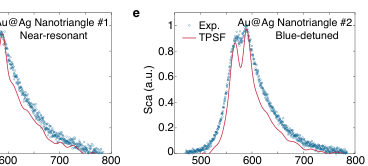
<figcaption class="paper-figure-caption"><b>Fig 4.</b> Fig. 3 Generalization of the TPSF framework to realistic open plasmonic nanocavities. a, Schematic of Au@Ag nanorod- and nanotriangle-based plasmonic nanocavities coated with a thin J-aggregate layer. Insets show representative SEM images (scale bars: 200 nm). b–e, Experimental scattering spectra (blue symbols) before reconstruction and the corresponding TPSF-reconstructed spectra (red curves) for representative Au@Ag nanorod (b,c) and nanotriangle (d,e) nanocavities. In all cases, TPSF recovers the hidden upper and lower polariton branches that remain obscured in the measured spectra, demonstrating that the framework is robust across different plasmonic architectures, distributed excitonic...</figcaption>
</figure>
</div>

<p><strong>Summary.</strong> The authors introduce Temporal Fourier Optics (TFO) to overcome the challenge of spectral broadening caused by dissipation in optical measurements. By treating this broadening as a compensable temporal attenuation, they develop a TPSF reconstruction method. This technique successfully reveals hidden hybridized light-matter states in plasmonic and molecular systems, offering a general tool for spectroscopy across various wave physics domains.</p>
<p><strong>Why it may be interesting.</strong> This work provides a powerful, experimentally accessible tool—TFO—to probe fundamental quantum phenomena like strong light-matter coupling in dissipative environments, extending beyond standard complex-frequency formalisms.</p>
<details>
<summary>Detailed structure</summary>
<p><strong>Main problem.</strong> Intrinsic dissipation and measurement-induced spectral broadening obscure underlying hybridized light–matter states, making their direct observation challenging in spectroscopy.</p>
<p><strong>Main result.</strong> The Temporal Fourier Optics (TFO) framework successfully reconstructs these hidden upper and lower polaritonic branches across diverse platforms, revealing strong coupling regimes otherwise unresolved by conventional methods.</p>
<p><strong>Method.</strong> A temporal point-spread-function (TPSF) reconstruction method is implemented, which compensates for effective temporal decay before performing a Fourier transformation to recover intrinsic spectral responses.</p>
<p><strong>Model / system.</strong> The work applies the framework to deterministic single-molecule Au nanosphere dimers and open Au@Ag plasmonic nanocavities coupled to J-aggregate excitons. The underlying physics is governed by wave propagation principles analogous to spatial diffraction.</p>
<p><strong>Key observables.</strong> Reconstructed upper and lower polaritonic branches, intrinsic spectral responses, scattering cross sections.</p>
<p><strong>Important parameters / regimes.</strong> Strong coupling regime ($   ext{g} &gt; (\gamma_{  ext{cav}} - \gamma_e)/4$), temporal decay rate ($\gamma$).</p>
<p><strong>Assumptions / limitations.</strong> Spectral broadening is mathematically equivalent to an effective temporal attenuation that can be inverted via the TFO framework.</p>
<p><strong>Figures summary.</strong> Figure 1 conceptually illustrates the space–time Fourier correspondence linking spatial diffraction and temporal spectral broadening; other figures likely show reconstruction results on various platforms.</p>
<p><strong>Paper structure.</strong> The paper first establishes the theoretical foundation by drawing an analogy between spatial PSF (diffraction) and temporal TPSF (dissipation). It then details the mathematical framework for compensation, followed by experimental validation across multiple plasmonic and molecular systems to demonstrate hidden state recovery.</p>
</details>
<details>
<summary>Abstract</summary>
<p>Spectral measurements provide fundamental insights into wave systems by revealing resonances, mode hybridization, and light-matter interactions. However, intrinsic dissipation and measurement-induced spectral broadening often conceal the underlying hybridized light-matter states that give rise to measured spectra. Here, we establish a space-time Fourier correspondence that interprets spectral broadening as an effective temporal attenuation, giving rise to a temporal Fourier optics framework for recovering hidden spectral information. Implemented through a temporal point-spread-function (TPSF) reconstruction method, the framework compensates the effective temporal decay before Fourier transformation, directly reconstructing intrinsic spectral responses from experimentally measured spectra without repeated frequency synthesis or model-dependent fitting. We experimentally validate the approach in deterministic single-molecule Au nanosphere dimers and open Au@Ag nanorod- and nanotriangle-based plasmonic nanocavities coupled to J-aggregate excitons. Across these diverse platforms, TPSF consistently reconstructs hidden upper and lower polaritonic branches, thereby revealing the underlying hybridized light-matter states and strong coupling that remain unresolved in conventional scattering spectra. The reconstructed spectra agree closely with the recently developed complex-frequency formalism while offering a considerably simpler and more experimentally accessible implementation. Beyond strong light-matter coupling, temporal Fourier optics establishes a general framework for uncovering physical states hidden by dissipation, opening new opportunities for spectroscopy, imaging, sensing, and inverse wave measurements across photonics and wave physics.</p>
</details>
<p><sub><a href="#top">↑ back to top</a></sub></p>

<p><a id="paper-2607.13664"></a></p>
<h3 id="direct-observation-of-photon-induced-vortices-in-superconducting-films"><a href="http://arxiv.org/abs/2607.13664v1">Direct observation of photon-induced vortices in superconducting films</a></h3>
<p><strong>Authors:</strong> Takeshi Jodoi, Fuminori Hirayama, Tetsuya Tsuruta, Takahiro Kikuchi, Daiji Fukuda<br>
<strong>Type:</strong> experiment · <strong>Category:</strong> other · <strong>PDF:</strong> <a href="https://arxiv.org/pdf/2607.13664v1">https://arxiv.org/pdf/2607.13664v1</a><br>
<strong>Analysis basis:</strong> full PDF text, analyzed in chunks
<strong>Topic relevance:</strong> <code>driven-dissipative phase transition</code> <strong>3/5</strong> · <code>quantum optics experiment</code> <strong>3/5</strong> · <code>QC/QI experiment</code> <strong>2/5</strong> · <code>non-equilibrium dynamics</code> <strong>2/5</strong> · <code>non-equilibrium universality</code> <strong>2/5</strong> · <code>quantum measurements</code> <strong>2/5</strong> · <code>analog quantum simulation</code> <strong>1/5</strong> · <code>correlated / nonlocal dissipation</code> <strong>1/5</strong> · <code>interference shaping light</code> <strong>1/5</strong> · <code>measurement-induced transitions</code> <strong>1/5</strong> · <code>methods for driven-dissipative</code> <strong>1/5</strong></p>
<div class="figure-strip-hint">↔ Scroll figures horizontally</div>
<div class="paper-figures-scroll">
<figure class="paper-figure-card">
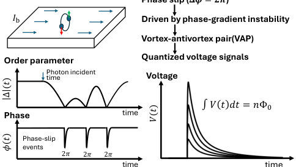
<figcaption class="paper-figure-caption"><b>Fig 1.</b> FIG. 1. Schematic illustration of photon detection mecha- nisms: (a) conventional resistive detection, in which pho- ton absorption generates many vortex–antivortex pairs, re- sulting in heating, normal-domain formation, and a resistive response; and (b) VAP-mediated phase-slip detection (VBD in this work), in which only a few VAPs are generated and directly detected as quantized voltage pulses. The lower pan- els illustrate the transient suppression and recovery of the superconducting order parameter ∆(t) and the correspond- ing phase evolution ϕ(t) associated with discrete phase-slip events.</figcaption>
</figure>
<figure class="paper-figure-card">
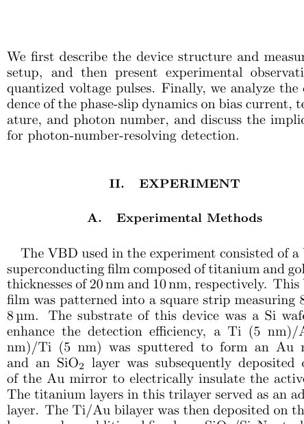
<figcaption class="paper-figure-caption"><b>Fig 2.</b> Figure 2(a) shows the readout circuit for the VBD, where the VBD and an inductor with inductance L are shunted by a resistor Rs. A bias current Ib is supplied to the VBD from an external current source. The VBD is cooled to a base temperature Tb &lt; Tc so that under equilibrium conditions, almost all of Ib flows through the VBD. The VBD is optically coupled to a fiber, and a laser pulse with an average photon number µin is delivered to it through the fiber. The wavelength of the incident pho- tons was 1526 nm. After photon absorption in the VBD, a voltage signal ∆v(t) results from either the formation of resistance or the induced electromotive force due to the VAP motion, which is read out by...</figcaption>
</figure>
<figure class="paper-figure-card">

<figcaption class="paper-figure-caption"><b>Fig 3.</b> FIG. 2. Readout circuit for the VBD. The rectangle with an arrow represents the VBD as the photon detection device. Rs: shunt resistance; Ib: bias current; L: kinetic inductance; ∆I: change in current flowing in this readout circuit. (b) The VBD is fabricated on a key-shaped Si substrate to improve alignment between the optical fiber and the VBD. (c) The active area of the VBD. This active area consists of the Ti (20 nm)/Au (10 nm) bilayer, and the electrodes are made of niobium.</figcaption>
</figure>
<figure class="paper-figure-card">

<figcaption class="paper-figure-caption"><b>Fig 4.</b> Fig.4(b)</figcaption>
</figure>
<figure class="paper-figure-card">

<figcaption class="paper-figure-caption"><b>Fig 5.</b> FIG. 3. (a) Experimental data showing the dependence of the critical current on the base temperature. These experimental data of the critical current are obtained from the current–voltage characteristics, and the dotted line is extrapolated to determine Ic(T = 0 mK). (b) Recorded signals at Ib =5.0 µA, Tb = 6 mK, Rs = 21.4 mΩ, and µin = 10 photons per pulse. Under this condition, the time constant of the VBD is τ = 445 ns.</figcaption>
</figure>
</div>

<p><strong>Summary.</strong> The authors report the direct observation of photon-induced vortex-antivortex pair dynamics in superconducting films, interpreting the resulting quantized voltage signals as discrete phase-slip events. By analyzing the statistical fluctuations of these VAPs, they demonstrate that the device achieves photon-number resolution by linking absorbed photons directly to countable flux quanta changes.</p>
<p><strong>Why it may be interesting.</strong> This work provides an experimental realization of quantum light detection based on fundamental superconducting phase dynamics (phase slips), offering a novel pathway for high-speed quantum optical detectors distinct from standard resistive or quasiparticle tunneling mechanisms.</p>
<details>
<summary>Detailed structure</summary>
<p><strong>Main problem.</strong> The study aims to directly observe photon-induced vortex-antivortex pair (VAP) dynamics in superconducting films and demonstrate a mechanism for photon-number resolution.</p>
<p><strong>Main result.</strong> The detection signal is governed by quantized voltage pulses resulting from discrete phase-slip events, allowing for the direct counting of absorbed photons under specific operating conditions.</p>
<p><strong>Method.</strong> Measurements involve irradiating a superconducting film with laser pulses while monitoring the resulting quantized voltage signals using SQUID readout.</p>
<p><strong>Model / system.</strong> The physical system is a bilayer superconducting film patterned into a strip (VBD) operated in a current-carrying state. The mechanism relies on non-equilibrium phase dynamics where photon absorption triggers VAP nucleation, leading to $2\pi$ phase slips.</p>
<p><strong>Key observables.</strong> Quantized voltage pulses whose time integral equals integer multiples of the magnetic flux quantum ($\Phi_0$), and the second-order correlation function ($g^{(2)}_{	ext{VAP}}$).</p>
<p><strong>Important parameters / regimes.</strong> Bias current ($I_b$), base temperature ($T_b$), input photon number ($\mu_{	ext{in}}$), and the superconducting phase slip mechanism.</p>
<p><strong>Assumptions / limitations.</strong> The detection process is fundamentally governed by discrete phase-slip events rather than conventional resistive transitions, and PNR capability emerges when VAP generation fluctuations are statistically suppressed (approaching Poissonian statistics).</p>
<p><strong>Figures summary.</strong> Figures illustrate comparisons between resistive vs. phase-slip detection modes; show the temperature dependence of critical current ($I_c$); display pulse height distributions showing discrete peaks; and finally, present $g^{(2)}$ measurements confirming Poissonian statistics for photon counting.</p>
<p><strong>Paper structure.</strong> The paper progresses from establishing the physical platform (VBD) and contrasting its mechanism with conventional detectors. It then details the measurement of quantized voltage signals ($\Phi_0$ quantization). Finally, it uses correlation functions ($g^{(2)}$) to demonstrate that under optimized conditions, the VAP generation statistics match the incident photon statistics, confirming PNR.</p>
</details>
<details>
<summary>Abstract</summary>
<p>Nucleation of vortex-antivortex pairs (VAPs) is believed to play a central role in the photon detection mechanism of superconducting detectors; however, their direct dynamic observation has remained challenging. Here, we report the direct observation of photon-induced VAP dynamics in a current-carrying superconductor as quantized voltage signals following photon absorption. The observed signals are interpreted as discrete phase-slip events, where each vortex traversal induces a 2-pi phase change of the superconducting order parameter, resulting in a quantized voltage pulse whose time integral is given by the magnetic flux quantum. We analyze the resulting quantized signals as a function of bias current, base temperature, and input photon-number states, and find that the number of VAPs generated per absorbed photon becomes effectively stabilized under specific conditions. Under these conditions, we demonstrate photon-number-resolving capability by directly counting phase-slip-induced voltage quanta. Our results reveal a detection mechanism governed by phase dynamics rather than conventional resistive transitions. We further show that photon-number resolution emerges when the fluctuation of photon-induced vortex-antivortex pair generation becomes statistically suppressed. These findings establish a new route toward photon-number-resolving detection based on phase-slip counting and open opportunities for high-speed superconducting detectors for quantum optics and photonic quantum technologies.</p>
</details>
<p><sub><a href="#top">↑ back to top</a></sub></p>

<p><a id="paper-2607.14000"></a></p>
<h3 id="activity-regeneration-from-silent-states-in-neuronal-networks-with-transient-synaptic-memory"><a href="http://arxiv.org/abs/2607.14000v1">Activity Regeneration from Silent States in Neuronal Networks with Transient Synaptic Memory</a></h3>
<p><strong>Authors:</strong> Mozhgan Khanjanianpak, Alireza Valiadeh<br>
<strong>Type:</strong> theory · <strong>Category:</strong> disordered systems and neural networks · <strong>PDF:</strong> <a href="https://arxiv.org/pdf/2607.14000v1">https://arxiv.org/pdf/2607.14000v1</a><br>
<strong>Analysis basis:</strong> full PDF text, analyzed in chunks
<strong>Topic relevance:</strong> <code>driven-dissipative phase transition</code> <strong>3/5</strong> · <code>methods for driven-dissipative</code> <strong>3/5</strong> · <code>non-equilibrium dynamics</code> <strong>3/5</strong> · <code>analog quantum simulation</code> <strong>2/5</strong> · <code>entanglement &amp; information structure</code> <strong>2/5</strong> · <code>non-equilibrium universality</code> <strong>2/5</strong> · <code>Keldysh / 2PI / non-Gaussian methods</code> <strong>1/5</strong> · <code>correlated / nonlocal dissipation</code> <strong>1/5</strong> · <code>scars &amp; prethermalization</code> <strong>1/5</strong></p>
<div class="figure-strip-hint">↔ Scroll figures horizontally</div>
<div class="paper-figures-scroll">
<figure class="paper-figure-card">

<figcaption class="paper-figure-caption"><b>Fig 1.</b> FIG. 1. Schematic illustration of the proposed neuronal network model. (a) General dynamics of the model. A neuron becomes active when its total synaptic input exceeds the activation threshold D. One time step later, its outgoing synapses become active and remain active for a finite lifetime (TE for excitatory and TI for inhibitory synapses), after which they decay automatically. During this period, the neuron is considered a ghost neuron because reactivation does not generate new synaptic activity. Once all outgoing synapses have disappeared, the neuron becomes fresh and can again contribute new synaptic influence upon activation. (b) Schematic representation of the network dynamics...</figcaption>
</figure>
<figure class="paper-figure-card">

<figcaption class="paper-figure-caption"><b>Fig 2.</b> FIG. 2. Representative examples of the one-cycle and multi-cycle dynamical regimes together with several macroscopic quantities that fail to distinguish between them. (a,b) Temporal evolution of the active neuronal density ρ(t). In the one-cycle regime, activity terminates after the first silent interval at t = t(1) z , whereas in the multi-cycle regime activity spontaneously regenerates without additional external input. (c,d) Evolution of the global synaptic current, cT = WEϕE −WIϕI, showing that this macroscopic quantity alone does not predict activity regeneration. (e,f) Jaccard similarity between the active neuronal assembly and the initially stimulated assembly S0. In both regimes,...</figcaption>
</figure>
<figure class="paper-figure-card">

<figcaption class="paper-figure-caption"><b>Fig 3.</b> FIG. 3. One-cycle example. (a) Active density of neurons ρ and synapses ϕ in time. Although neuronal activity vanishes at the first silent state t(1) z (dashed vertical line), a substantial fraction of synapses remains active, motivating the snapshot analysis. (b,c) Evolution of the reconstructed excitatory and inhibitory input-current distributions obtained solely from the synaptic-memory snapshot at t(1) z , without continuing the simulation. Dashed vertical line indicates activation threshold of D = 5. Numbers of reactivated ghost and fresh (d) excitatory (e) inhibitory neurons during τ = t −t(1) z . The gradual decay of residual synaptic activity determines which neurons become eligible...</figcaption>
</figure>
<figure class="paper-figure-card">

<figcaption class="paper-figure-caption"><b>Fig 4.</b> FIG. 4. Multi-cycle example. (a) Active density of neurons ρ and synapses ϕ in time. (b,c) Evolution of the reconstructed excitatory and inhibitory input-current distributions obtained solely from the synaptic-memory snapshot at t(1) z . Dashed vertical line indicates activation threshold of D = 5. Numbers of reactivated ghost and fresh (d) excitatory (e) inhibitory neurons during τ = t−t(1) z . Although the current distributions span ranges comparable to those in the one-cycle example (Fig. 3), substantially more neurons exceed the activation threshold, suggesting a larger latent capacity for generating the next activation cycle.</figcaption>
</figure>
<figure class="paper-figure-card">

<figcaption class="paper-figure-caption"><b>Fig 5.</b> FIG. 5. Prediction of multi-cycle emergence from the synaptic-memory snapshot. (a,b) Temporal evolution of the numbers of fresh excitatory and inhibitory neurons that become eligible for activation during τ = t −t(1) z , aggregated over 2000 independent realizations. Most activation events occur within the first few time steps after the first silent state, indicating that the Latent Excitatory Recruitment (LER) of the network is established over a short time window. (c) Classification of all realizations according to the cumulative number of fresh excitatory neurons, RE = PTI τ=0 N fresh E (τ). Each point corresponds to one realization and is labeled according to whether the original...</figcaption>
</figure>
</div>

<p><strong>Summary.</strong> This work introduces a model where synaptic memory persists even after neuronal firing stops. The key finding is that the residual synaptic configuration alone contains sufficient information to predict if the network will spontaneously reactivate (regenerate activity) or die down. This suggests short-term memory is encoded in this latent, quantifiable synaptic capacity rather than just ongoing spikes.</p>
<p><strong>Why it may be interesting.</strong> While focused on neuroscience, the concept of predicting complex, non-equilibrium dynamics (like activity continuation) solely from a static 'memory' snapshot mirrors challenges in characterizing quantum states or emergent behavior in many-body systems without full time evolution.</p>
<details>
<summary>Detailed structure</summary>
<p><strong>Main problem.</strong> The study investigates whether the residual synaptic state alone contains enough information to predict if a neuronal network will spontaneously regenerate activity after a period of complete silence, or if it will simply terminate.</p>
<p><strong>Main result.</strong> The latent excitatory recruitment (LER) capacity, derived from analyzing the initial synaptic memory snapshot, was shown to be a near-perfect predictor of whether multi-cycle regeneration occurs without needing to simulate subsequent network dynamics.</p>
<p><strong>Method.</strong> The authors developed a novel snapshot-based framework that analyzes the residual synaptic configuration ($\mathbf{L}(t)$) at the first silent state to predict future dynamical outcomes.</p>
<p><strong>Model / system.</strong> The model is a minimal Synaptic-Lifetime Network (SLN), which is a discrete-time excitatory–inhibitory neural network incorporating finite-lifetime synapses. The system's state is defined by both neuronal activity ($\mathbf{X}(t)$) and the synaptic memory matrix ($\mathbf{L}(t)$).</p>
<p><strong>Key observables.</strong> Latent Excitatory Recruitment (LER) capacity, density of active neurons ($
ho(t)$), and the comparison between one-cycle vs. multi-cycle activity realizations.</p>
<p><strong>Important parameters / regimes.</strong> Network size ($N=2000$), mean degree ($\langle k_{in} 
angle = 200$), synaptic lifetimes ($T_E, T_I$), and network weights ($W_E=1, W_I=-4$).</p>
<p><strong>Assumptions / limitations.</strong> The analysis assumes the system can be characterized by a single snapshot $\langle X(t), L(t) 
angle$, simplifying the need for full time-series simulation to predict future behavior.</p>
<p><strong>Figures summary.</strong> Figures illustrate examples comparing one-cycle and multi-cycle dynamics, tracking activity levels and quantifying the number of 'fresh' versus 'ghost' excitatory neurons over time.</p>
<p><strong>Paper structure.</strong> The paper establishes the physical model (SLN with synaptic memory), defines the core problem (predicting regeneration from silence), develops the diagnostic tool (LER capacity predictor), presents results showing its accuracy, and concludes by discussing implications for understanding short-term memory encoding.</p>
</details>
<details>
<summary>Abstract</summary>
<p>Transient synaptic memory has emerged as a potential mechanism for maintaining short-term information even in the absence of persistent neuronal activity. However, it remains unclear whether the hidden synaptic state alone contains sufficient information to predict the future evolution of neuronal networks after activity has ceased. Here, we introduce a minimal neuronal network model with finite-lifetime synapses and investigate the mechanism underlying spontaneous activity regeneration following complete neuronal silence. We show that the residual synaptic configuration at the first silent state already determines whether network activity terminates after a single activation cycle or spontaneously regenerates an additional cycle. By analyzing this synaptic-memory snapshot, we identify the Latent Excitatory Recruitment (LER) capacity, quantified by the cumulative number of fresh excitatory neurons, as a near-perfect predictor of multi-cycle dynamics without continuing the subsequent network simulation. Remarkably, these distinct dynamical outcomes emerge in an otherwise homogeneous neuronal network, demonstrating that transient synaptic memory alone is sufficient to generate diverse future dynamics. Our findings provide a mechanistic explanation for activity regeneration from a residual synaptic state and suggest that short-term memory is encoded not only in ongoing neuronal activity but also in the latent synaptic configuration that preserves the network's capacity to recruit new neuronal assemblies. More broadly, the proposed snapshot-based framework offers a new perspective for predicting and potentially controlling the future evolution of neuronal networks.</p>
</details>
<p><sub><a href="#top">↑ back to top</a></sub></p>

<p><a id="paper-2607.13856"></a></p>
<h3 id="condition-for-math275math-noise-to-occur-along-with-an-example-for-a-diffusion-equation"><a href="http://arxiv.org/abs/2607.13856v1">Condition for $1/f$ noise to occur along with an example for a diffusion equation</a></h3>
<p><strong>Authors:</strong> H. Mouri<br>
<strong>Type:</strong> theory · <strong>Category:</strong> statistical mechanics · <strong>PDF:</strong> <a href="https://arxiv.org/pdf/2607.13856v1">https://arxiv.org/pdf/2607.13856v1</a><br>
<strong>Analysis basis:</strong> full PDF text, analyzed in chunks
<strong>Topic relevance:</strong> <code>non-equilibrium universality</code> <strong>3/5</strong> · <code>Keldysh / 2PI / non-Gaussian methods</code> <strong>2/5</strong> · <code>correlated / nonlocal dissipation</code> <strong>2/5</strong> · <code>driven-dissipative phase transition</code> <strong>2/5</strong> · <code>non-equilibrium dynamics</code> <strong>2/5</strong> · <code>Kondo &amp; dissipative impurity</code> <strong>1/5</strong> · <code>analog quantum simulation</code> <strong>1/5</strong> · <code>entanglement &amp; information structure</code> <strong>1/5</strong> · <code>methods for driven-dissipative</code> <strong>1/5</strong> · <code>scars &amp; prethermalization</code> <strong>1/5</strong></p>
<div class="figure-strip-hint">↔ Scroll figures horizontally</div>
<div class="paper-figures-scroll">
<figure class="paper-figure-card">

<figcaption class="paper-figure-caption"><b>Fig 1.</b> FIG. 1. (a) Examples of Fourier modes in Eq. (10) at a certain time t against the position x. (b) Spectral intensities Iq0 and Ij0 in Eqs. (7) and (11) against the normalized frequency ωτc.</figcaption>
</figure>
<figure class="paper-figure-card">

<figcaption class="paper-figure-caption"><b>Fig 2.</b> Figure 1(a) shows our setup for the diffusion of a quan- tity q from a boundary at x = 0 into a medium at x &gt; 0. We write a one-dimensional diffusion equation as</figcaption>
</figure>
<figure class="paper-figure-card">

<figcaption class="paper-figure-caption"><b>Fig 3.</b> FIG. 2. (a) Linear plot of j0 and dq0/dt in Eq. (13), induced by an impulse at time t0, against the normalized lapse time (t −t0)/τc. (b) Same as in (a) but on logarithmic scales.</figcaption>
</figure>
<figure class="paper-figure-card">

<figcaption class="paper-figure-caption"><b>Fig 4.</b> Figure 2 shows the linear and logarithmic plots of j0(t0|t) and dq0(t0|t)/dt. The response j0(t0|t) is slow [2]. Espe- cially at t −t0 ≪τc on the logarithmic plot, correspond- ing to the range ω ≫1/τc of the 1/f noise, although dq0(t0|t)/dt has already increased, j0(t0|t) is still increas- ing as R t t0 dt′/√t −t′ ∝√t −t0. This slow response has transformed the white noise w(t) into the 1/f noise of the diffusion flux j0(t).</figcaption>
</figure>
<figure class="paper-figure-card">

<figcaption class="paper-figure-caption"><b>Fig 5.</b> FIG. 3. Overlap between ˜ψlarge and ˜ψsmall, i.e., two solutions for ωIj/j2 c in Eq. (15) at the angular frequencies of 1/τlarge ≲ ω ≪1/τsmall and 1/τlarge ≪ω ≲1/τsmall.</figcaption>
</figure>
</div>

<p><strong>Summary.</strong> This paper derives a general, necessary, and sufficient statistical condition for any system to exhibit 1/f noise. By analyzing various physical models, including diffusion equations and electrical circuits, the authors conclude that this ubiquitous noise requires its dynamics to be governed by exactly two separated characteristic timescales. This provides a powerful, universal diagnostic tool for understanding complex relaxation phenomena.</p>
<p><strong>Why it may be interesting.</strong> While focused on classical noise sources, the mathematical framework involving spectral density analysis and the identification of universal scaling laws (like $1/f$) is highly relevant to characterizing non-equilibrium dynamics in open quantum systems or complex many-body relaxation processes.</p>
<details>
<summary>Detailed structure</summary>
<p><strong>Main problem.</strong> The primary goal is to determine a necessary and sufficient condition for the occurrence of ubiquitous 1/f noise, which has an uncertain underlying physics.</p>
<p><strong>Main result.</strong> A stationary 1/f noise requires the system's dynamics to be characterized by exactly two separated constant timescales ($f_{	ext{low}}$ and $f_{	ext{high}}$), with no other constant parameters in between.</p>
<p><strong>Method.</strong> The analysis uses frequency domain techniques (Fourier transforms) applied to models like diffusion equations and Ornstein-Uhlenbeck processes, relating spectral intensity to the system's correlation functions.</p>
<p><strong>Model / system.</strong> The study analyzes several models, including a one-dimensional diffusion equation for a quantity $q(x, t)$ and an electrical circuit modeled by the telegraph equation. The core mathematical tool is analyzing how white noise input translates into colored noise output.</p>
<p><strong>Key observables.</strong> Spectral intensity of the noise current or flux ($I(\omega)$), specifically showing $\propto 1/\omega$ scaling for $1/f$ noise.</p>
<p><strong>Important parameters / regimes.</strong> Two separated constant frequencies ($   ext{flow} \ll f_{   ext{high}}$) and two characteristic timescales ($   au_{    ext{small}},    au_{    ext{large}}$).</p>
<p><strong>Assumptions / limitations.</strong> The analysis assumes the noise is stationary. In some derivations, approximations like neglecting shunt conductance or taking limits at infinite frequency are employed.</p>
<p><strong>Figures summary.</strong> Figures illustrate spectral intensities for diffusion setups and electrical circuits, showing transitions to $1/\omega$ scaling as separation between timescales increases.</p>
<p><strong>Paper structure.</strong> The paper develops the condition through multiple physical examples (diffusion, electrical circuit) before stating a general statistical criterion based on the existence of two separated time scales ($  au_{    ext{small}},    au_{    ext{large}}$).</p>
</details>
<details>
<summary>Abstract</summary>
<p>While $1/f$ noise is ubiquitous and has been found in various systems, its physics remains uncertain. From an analytical study of an ordinary diffusion equation, we find an additional example of the $1/f$ noise. The formula for this example, together with existing knowledge about scaling in fluid turbulence, implies a necessary and sufficient condition for the occurrence of any stationary $1/f$ noise. That is, the noise needs to be characterized by two constant frequencies of $f_{\rm low} \ll f_{\rm high}$. For a frequency range from $f = f_{\rm low}$ to $f_{\rm high}$, it is further needed that, except for the mean amplitude of the noise, there is no other constant parameter. Then, at $f_{\rm low} \ll f \ll f_{\rm high}$, the noise scales asymptotically as $1/f$. Being statistical and simple, our condition applies to any system and hence explains the ubiquity of the $1/f$ noise. It is also applicable to some systems with noise of $α\ne 1.0$ for $1/f^α$, via intermittency analogous to that of the turbulence.</p>
</details>
<p><sub><a href="#top">↑ back to top</a></sub></p>

<p><a id="paper-2607.13616"></a></p>
<h3 id="opinion-formation-in-a-spatially-constrained-coevolving-nonlinear-voter-model"><a href="http://arxiv.org/abs/2607.13616v1">Opinion Formation in a Spatially Constrained Coevolving Nonlinear Voter Model</a></h3>
<p><strong>Authors:</strong> Phil Gwon Kim, Jaeyong Bae, Jaeseok Hur, Hawoong Jeong<br>
<strong>Type:</strong> theory · <strong>Category:</strong> statistical mechanics · <strong>PDF:</strong> <a href="https://arxiv.org/pdf/2607.13616v1">https://arxiv.org/pdf/2607.13616v1</a><br>
<strong>Analysis basis:</strong> full PDF text, analyzed in chunks
<strong>Topic relevance:</strong> <code>driven-dissipative phase transition</code> <strong>3/5</strong> · <code>non-equilibrium universality</code> <strong>3/5</strong> · <code>analog quantum simulation</code> <strong>2/5</strong> · <code>non-equilibrium dynamics</code> <strong>2/5</strong> · <code>Frenkel-Kontorova</code> <strong>1/5</strong> · <code>Keldysh / 2PI / non-Gaussian methods</code> <strong>1/5</strong> · <code>correlated / nonlocal dissipation</code> <strong>1/5</strong> · <code>entanglement &amp; information structure</code> <strong>1/5</strong> · <code>methods for driven-dissipative</code> <strong>1/5</strong> · <code>scars &amp; prethermalization</code> <strong>1/5</strong></p>
<div class="figure-strip-hint">↔ Scroll figures horizontally</div>
<div class="paper-figures-scroll">
<figure class="paper-figure-card">

<figcaption class="paper-figure-caption"><b>Fig 1.</b> FIG. 1. Summary of empirical regimes and macroscopic observables. (a) Empirical regime classification, (b) ⟨|m|⟩, (c) ⟨Smax/N⟩, (d) ⟨ρ⟩, (e) ⟨k⟩, and (f) ⟨Niso⟩. Simulations are performed with N = 212 and maximum observation time Tmax = 215</figcaption>
</figure>
<figure class="paper-figure-card">

<figcaption class="paper-figure-caption"><b>Fig 2.</b> FIG. 2. system size dependence at p = 0.25 and q = 1. These simulations use Tmax = 216 MCS, and all runs shown reach absorption within this time. The absorbed-run magnetization decreases strongly with N, whereas ⟨Smax/N⟩remains larger, consistent with a dominant connected cluster with residual opposite-state clusters. Error bars represent the standard er- ror.</figcaption>
</figure>
<figure class="paper-figure-card">

<figcaption class="paper-figure-caption"><b>Fig 3.</b> FIG. 3. Spatial segregation in final configurations. (a) Spa- tial enrichment ∆sp in the (p, q) plane. The labels P1–P5 denote the empirical regimes from Fig. 1. (b,c) Represen- tative absorbing configurations for P3 and P2, respectively. P3 illustrates spatially segregated fragmentation, whereas P2 illustrates mainly topological fragmentation with weak real- space segregation.</figcaption>
</figure>
<figure class="paper-figure-card">

<figcaption class="paper-figure-caption"><b>Fig 4.</b> Fig. 3(a) shows that P3 is distinguished from the other absorbing fragmented regimes by a strong enhancement of the spatial enrichment. For instance, P2 can be both absorbing and fragmented in the graph-theoretic sense, but it exhibits only weak spatial enrichment. Thus, P2 primarily represents topological fragmentation, in which discordant links are removed without significant real- space separation of the two state types. In contrast, P3 corresponds to spatially segregated fragmentation, in which graph fragmentation is accompanied by real-space state-domain separation. Standard link-based assortativity [27] cannot distin- guish these absorbing configurations, because all surviv- ing links...</figcaption>
</figure>
<figure class="paper-figure-card">

<figcaption class="paper-figure-caption"><b>Fig 5.</b> FIG. 4. Normalized p-dependence of the observables for q = 0.5 and q = 2.0. The tilde denotes that each ensemble- averaged observable is normalized by its maximum value along the corresponding q-cut ( ˜O ≡⟨O⟩/⟨O⟩max). As an example, the black curve for ˜ Niso represents the normalized values derived from each corresponding q-cut in Fig.1 (f). (a) At q = 2.0, ˜ Nfail reaches its maximum at p = 1, whereas ˜ Niso exhibits a distinct peak at p &lt; 1. (b) At q = 0.5, ˜ Niso closely follows the failed rewiring count ˜ Nfail. The shaded region indi- cates the active regime where no runs reached the absorbing state within Tmax, and is thus excluded from the statistics. Error bars represent the...</figcaption>
</figure>
</div>

<p><strong>Summary.</strong> This paper analyzes a nonlinear voter model where social interactions occur on a spatially constrained network. By incorporating rules that delete links when rewiring fails, the authors show that global consensus is fragile. Instead, the system settles into fragmented absorbing states whose structure depends critically on the interplay between local geometry and interaction parameters.</p>
<p><strong>Why it may be interesting.</strong> While focused on classical opinion dynamics, the framework of non-equilibrium phase transitions, absorbing states, and structural changes due to local constraints (like link deletion) mirrors concepts in quantum many-body systems undergoing localization or fragmentation.</p>
<details>
<summary>Detailed structure</summary>
<p><strong>Main problem.</strong> The study investigates opinion formation dynamics in a spatially constrained coevolving nonlinear voter model, focusing on how local geometric constraints alter the nature of absorbing states.</p>
<p><strong>Main result.</strong> Local geometric accessibility fundamentally reshapes the structure of absorbing states, leading to distinct regimes characterized by reduced consensus regions and spatially segregated fragmentation rather than robust global consensus.</p>
<p><strong>Method.</strong> The authors employ extensive numerical simulations across parameter space $(p, q)$ on a Random Geometric Graph (RGG), utilizing techniques like finite-size scaling and route closure equations to characterize absorption processes.</p>
<p><strong>Model / system.</strong> The model is a Nonlinear Voter Model implemented on an RGG embedded in 2D space. Dynamics involve state flips and rewiring attempts, with the crucial modification being link deletion when local rewiring fails due to spatial constraints.</p>
<p><strong>Key observables.</strong> Magnetization ($\langle|m|
angle$), active link density ($\langle
ho
angle$), largest connected component fraction ($\langle S_{max}/N
angle$), mean degree ($\langle k
angle$), and the spatial enrichment ($\Delta sp$).</p>
<p><strong>Important parameters / regimes.</strong> The interaction probability ($p$) and the rewiring/coevolution parameter ($q$); system size ($N$).</p>
<p><strong>Assumptions / limitations.</strong> The analysis assumes that deviations from standard CNVM due to link deletion are key; finite-size effects are noted when interpreting consensus regimes.</p>
<p><strong>Figures summary.</strong> Figures map out empirical regimes (P1-P5) based on multiple observables, showing size dependence of magnetization loss (Fig. 2), and distinguishing between topological vs. real-space fragmentation using spatial enrichment ($\Delta sp$) (Fig. 3).</p>
<p><strong>Paper structure.</strong> The paper systematically analyzes the model by first defining the constrained dynamics, then mapping out empirical regimes via multiple observables, developing phenomenological descriptions for mean degree evolution, and finally applying advanced techniques like finite-time scaling to characterize absorption boundaries.</p>
</details>
<details>
<summary>Abstract</summary>
<p>We investigate a spatially constrained coevolving nonlinear voter model. Using a random geometric graph, we constrain the interaction range of voter dynamics. If local rewiring is not possible, the discordant link is deleted. Our results reveal absorbing states that differ not only in magnetization and activity, but also in mean degree and spatial state organization. By exploring dynamical and structural observables, we found that distinct regimes from the existing coevolving nonlinear voter model are characterized by a reduced consensus region, spatially segregated fragmentation, and isolated node formation. Additionally, we develop a phenomenological description of the evolution of the mean degree and terminal non-conserved quantities that is consistent with the numerical results. Our model highlights how local geometric accessibility reshapes the structure of the absorbing states.</p>
</details>
<p><sub><a href="#top">↑ back to top</a></sub></p>

<p><a id="paper-2607.13322"></a></p>
<h3 id="robust-topological-oscillators-govern-a-tunable-phase-transition-to-synchronized-circadian-rhythms"><a href="http://arxiv.org/abs/2607.13322v1">Robust topological oscillators govern a tunable phase transition to synchronized circadian rhythms</a></h3>
<p><strong>Authors:</strong> Chongbin Zheng, Evelyn Tang, Peter Thomas<br>
<strong>Type:</strong> theory · <strong>Category:</strong> statistical mechanics · <strong>PDF:</strong> <a href="https://arxiv.org/pdf/2607.13322v1">https://arxiv.org/pdf/2607.13322v1</a><br>
<strong>Analysis basis:</strong> full PDF text, analyzed in chunks
<strong>Topic relevance:</strong> <code>driven-dissipative phase transition</code> <strong>3/5</strong> · <code>methods for driven-dissipative</code> <strong>3/5</strong> · <code>non-equilibrium universality</code> <strong>3/5</strong> · <code>non-equilibrium dynamics</code> <strong>2/5</strong> · <code>Frenkel-Kontorova</code> <strong>1/5</strong> · <code>Keldysh / 2PI / non-Gaussian methods</code> <strong>1/5</strong> · <code>analog quantum simulation</code> <strong>1/5</strong> · <code>correlated / nonlocal dissipation</code> <strong>1/5</strong> · <code>entanglement &amp; information structure</code> <strong>1/5</strong></p>
<div class="figure-strip-hint">↔ Scroll figures horizontally</div>
<div class="paper-figures-scroll">
<figure class="paper-figure-card">

<figcaption class="paper-figure-caption"><b>Fig 1.</b> FIG. 1. Single-molecule oscillations of KaiC phosphorylation level are synchronized through KaiA sequestration. (a) Individ- ual KaiC hexamers undergo ordered phosphorylation cycles. KaiA dimers (red) promote KaiC phosphorylation and become sequestered during dephosphorylation. (x, y) denotes the number of phosphorylated T and S sites, respectively. (b) Phospho- rylation dynamics of a single KaiC molecule can be captured by a topological model with a 2D state space. When ρ &gt; 0, the system is in a topological phase, where edge currents give rise to autonomous single-molecule oscillations [44]. (c) A population of KaiC oscillators are synchronized through KaiA sequestration. When KaiA is...</figcaption>
</figure>
<figure class="paper-figure-card">

<figcaption class="paper-figure-caption"><b>Fig 2.</b> FIG. 2. Single-oscillator coherence governs a novel phase transition to synchronization and determines finite-N scaling behavior for collective oscillations. (a) In the deterministic limit N →∞, a phase transition to synchronization occurs when the single- oscillator coherence R1 ≳1.96 (dashed line). The dark blue region corresponds to a synchronous phase with sustained oscillations (e.g., in yellow), while the light blue region corresponds to an asynchronous phase with damped oscillations (in green). (b) Population-level coherence RN grows with N via power laws in the synchronous phase, but stops growing at large N in the asynchronous phase. Circles and triangles represent simulation...</figcaption>
</figure>
<figure class="paper-figure-card">

<figcaption class="paper-figure-caption"><b>Fig 3.</b> FIG. 3. Experimental modifications shape population-level behavior by tuning single-molecule transitions rates. (a) In our model, KaiC mutants with longer population-level period T correspond to a larger topological parameter ρ, which leads to larger oscillation amplitudes in % P-KaiC as experimentally observed [60]. The period is normalized by T1 at ρ = 3. (b) Internal transitions from Fig. 1(b) can be modified by different experimental conditions. KaiB mutants show different binding rates (top), Mg2+ concentration regulates A-loop conformational change from buried to exposed (left), KaiA acts catalytically to prime phosphorylation (bottom), while KaiC period mutants modulate CI ATPase...</figcaption>
</figure>
<figure class="paper-figure-card">

<figcaption class="paper-figure-caption"><b>Fig 4.</b> FIG. 4. KaiC oscillations and collective period are robust under changing KaiA concentration cA. (a) Sustained oscillations in % P-KaiC persist over a wide range of cA. Different colors correspond to different cA shown in (b). (b) The range of cA supporting sustained oscillations expands with the thermodynamic force µ. Oscillations are lost when cA is too high or too low, but can be restored by increasing µ (white arrows). The hatched area indicate the parameter range for which sustained KaiC oscillations are observed experimentally [30, 34, 45, 59]. (c) The oscillation period in our model (blue circles) is robust under changing cA, consistent with experimental data (stars) [30, 70]. In...</figcaption>
</figure>
<figure class="paper-figure-card">

<figcaption class="paper-figure-caption"><b>Fig 5.</b> FIG. 5. Oscillation amplitude near phase boundaries reveal qualitatively different bifurcations. (a) At the standard KaiA concentration cA = 1 and fixed ρ, the oscillation amplitude of % P-KaiC grows as √µ −µc when the thermodynamic force µ exceeds some critical value µc, a hallmark of a supercritical Hopf bifurcation. (b) The same square root scaling √ρ −ρc is observed when tuning the topological parameter ρ at cA = 1 and fixed µ. (c) At high cA and fixed (µ, ρ), the amplitude decreases as √cA,c −cA, indicating another supercritical Hopf bifurcation. (d) At low cA, the transition is qualitatively different. The system first enters a bistable regime with a stable limit cycle (nonzero...</figcaption>
</figure>
</div>

<p><strong>Summary.</strong> This work develops a theoretical model for circadian rhythm synchronization in biological oscillators that incorporate intrinsic noise. It establishes that the transition to robust, synchronized rhythms is governed solely by the single-oscillator coherence ($R_1$). The findings provide a powerful framework for understanding how molecular parameters can be tuned to maintain collective order despite underlying stochasticity.</p>
<p><strong>Why it may be interesting.</strong> While focused on biology, the mathematical framework—analyzing phase transitions in coupled stochastic systems based on a single-particle metric ($R_1$)—is highly relevant to non-equilibrium statistical mechanics and open quantum systems exhibiting collective behavior.</p>
<details>
<summary>Detailed structure</summary>
<p><strong>Main problem.</strong> The research aims to understand how intrinsic stochastic noise affects synchronization in biological oscillators, particularly developing a tunable mechanism for achieving robust collective rhythms.</p>
<p><strong>Main result.</strong> Synchronization is shown to depend only on the single-oscillator coherence ($R_1$), leading to a phase transition predicted at $R_1 \gtrsim 1.96$, independent of specific biochemical rates.</p>
<p><strong>Method.</strong> The study uses stochastic modeling (master equation) and analyzes both mesoscopic and macroscopic limits, characterizing dynamics via coherence measures and scaling laws around the critical point.</p>
<p><strong>Model / system.</strong> The system models the KaiABC circadian clock in cyanobacteria, focusing on the phosphorylation of KaiC proteins. The dynamics are governed by rate equations incorporating coupling strength derived from KaiA sequestration.</p>
<p><strong>Key observables.</strong> Single-oscillator coherence ($R_1$), population-level coherence ($R_N$), and timing error (coefficient of variation of the period $T$).</p>
<p><strong>Important parameters / regimes.</strong> Topological parameter ($
ho$), thermodynamic force ($\mu$, related to ATP/ADP ratio), and coupling strength ($c_{seq}A$).</p>
<p><strong>Assumptions / limitations.</strong> The analysis relies on modeling stochastic transitions, using a diffusion approximation for large N, and assuming instantaneous KaiA sequestration upon entering specific state regions.</p>
<p><strong>Figures summary.</strong> Figures illustrate the single-molecule phase space, population synchronization dynamics showing scaling laws above/below the transition, and how experimental modifications tune parameters leading to changes in collective behavior.</p>
<p><strong>Paper structure.</strong> The paper develops a novel mechanism linking synchronization to $R_1$, analyzes the resulting phase transition using deterministic limits, examines mesoscopic vs. macroscopic scaling properties, and discusses compensatory mechanisms that restore coherence after disruption.</p>
</details>
<details>
<summary>Abstract</summary>
<p>While synchronization has been well-studied in deterministic oscillators, most underlying oscillators are stochastic in both natural and man-made systems. Yet, the effects of intrinsic stochasticity remain poorly understood. Here, we develop a new mechanism for synchronizing circadian KaiC molecules that have topologically protected cycles. We find a phase transition to synchronization that depends only on the single-oscillator coherence, across a range of molecular changes that determine this coherence. Examining both mesoscopic and macroscopic numbers relevant for cellular and in vitro conditions respectively, we find different scaling properties above and below the phase transition. Our results shed light on several existing experiments and further predict that external changes can be offset by compensatory changes that improve the single-oscillator coherence - demonstrating a tunable pathway between stochastic single oscillators and their robust collective rhythms.</p>
</details>
<p><sub><a href="#top">↑ back to top</a></sub></p>

<p><a id="paper-2607.13384"></a></p>
<h3 id="a-loewner-theoretic-approach-to-the-nonlinear-generalized-langevin-equation-the-role-of-entropy-in-colored-noise-environment"><a href="http://arxiv.org/abs/2607.13384v1">A Loewner-Theoretic Approach to the Nonlinear Generalized Langevin Equation: The Role of Entropy in Colored Noise Environment</a></h3>
<p><strong>Authors:</strong> Yusuke K. Shibasaki<br>
<strong>Type:</strong> theory · <strong>Category:</strong> statistical mechanics · <strong>PDF:</strong> <a href="https://arxiv.org/pdf/2607.13384v1">https://arxiv.org/pdf/2607.13384v1</a><br>
<strong>Analysis basis:</strong> full PDF text, analyzed in chunks
<strong>Topic relevance:</strong> <code>correlated / nonlocal dissipation</code> <strong>3/5</strong> · <code>methods for driven-dissipative</code> <strong>3/5</strong> · <code>non-equilibrium dynamics</code> <strong>3/5</strong> · <code>non-equilibrium universality</code> <strong>3/5</strong> · <code>driven-dissipative phase transition</code> <strong>2/5</strong> · <code>Keldysh / 2PI / non-Gaussian methods</code> <strong>1/5</strong></p>
<div class="figure-strip-hint">↔ Scroll figures horizontally</div>
<div class="paper-figures-scroll">
<figure class="paper-figure-card">

<figcaption class="paper-figure-caption"><b>Fig 1.</b> Fig. 1. Plots of nonlinear response functions of two different types of FDRs. (a) Time-dependent dynamics of R(t, t + h) calculated using Eq. (21). (b) Time-dependent dynamics of of R(s, s + h) calculated using Eq. (29).</figcaption>
</figure>
<figure class="paper-figure-card">

<figcaption class="paper-figure-caption"><b>Fig 2.</b> Fig. 2. Exponential decay of nonlinear response functions. (a) Log-log plot of the time-dependent dynamics of R(t, t+h) calculated using Eq. (21). (b) Log-log plot of the time-dependent dynamics of of R(s, s + h) calculated using Eq. (29). The black dotted lines in each log-log plot represents the scaling of t−1.</figcaption>
</figure>
</div>

<p><strong>Summary.</strong> This paper develops a novel theoretical framework by applying Loewner theory to derive a nonlinear Generalized Langevin Equation. It reformulates the Fluctuation-Dissipation Relation using conformal mappings, showing that the resulting system exhibits a characteristic $t^{-1}$ energy dissipation scaling law. This connects complex analysis tools to fundamental problems in non-equilibrium statistical mechanics.</p>
<p><strong>Why it may be interesting.</strong> This work connects advanced complex analysis (Loewner evolution) directly to non-equilibrium statistical mechanics concepts like FDRs and energy dissipation, providing a novel mathematical framework for open quantum systems dynamics.</p>
<details>
<summary>Detailed structure</summary>
<p><strong>Main problem.</strong> The study aims to derive a nonlinear generalized Langevin equation (GLE) and analyze the role of entropy in colored noise environments using advanced mathematical tools.</p>
<p><strong>Main result.</strong> The Loewner-theoretic approach reformulates the GLE derivation, leading to specific forms for the Fluctuation-Dissipation Relation (FDR) that predict an energy dissipation scaling law $R \sim t^{-1}$.</p>
<p><strong>Method.</strong> It employs a decomposition method based on conformal transformations governed by the chordal Loewner equation and modifies the Mori-Zwanzig formalism.</p>
<p><strong>Model / system.</strong> The model is a one-dimensional nonlinear GLE, applied conceptually to processes like cell migration, which involves analyzing stochastic dynamics in colored noise environments.</p>
<p><strong>Key observables.</strong> Response function $R(t, t+h)$, energy dissipation scaling law ($R \sim t^{-1}$), and Loewner entropy ($S_{Loew}$).</p>
<p><strong>Important parameters / regimes.</strong> The memory kernel structure and the nature of the colored noise environment are central.</p>
<p><strong>Assumptions / limitations.</strong> Key assumptions include approximating the autocorrelation function using backward Loewner evolution properties and assuming the system's nonlinear response is forced in a conformal field.</p>
<p><strong>Figures summary.</strong> Figures show time-dependent behavior and log-log plots confirming the predicted $t^{-1}$ scaling for two different forms of the response function derived from the theory.</p>
<p><strong>Paper structure.</strong> The paper progresses by first establishing the GLE via Loewner theory, deriving multiple FDR expressions (Kubo vs. Loewner), analyzing the role of Loewner entropy in these relations, and finally confirming the predicted $t^{-1}$ scaling through numerical simulations.</p>
</details>
<details>
<summary>Abstract</summary>
<p>In this study, the formal derivation of a one-dimensional nonlinear generalized Langevin equation is demonstrated using a decomposition method based on the conformal transformation governed by the chordal Loewner equation. Here, we used a modified Mori-Zwanzig method whose operator is substituted by that is derived from the discrete Loewner evolution. By this approach, the different types of fluctuation-dissipation relation (FDR) were reformulated using mathematical terms affected by the conformal maps. Dealing with a memory kernel that models the cell migration experiment, the numerical simulation was performed to obtain the specific scaling law of energy dissipation that is common among the two obtained types of FDRs. In addition, the concept of Loewner entropy is used for the estimation of the canonical ensemble in the colored noise environment throughout the theoretical analyses.</p>
</details>
<p><sub><a href="#top">↑ back to top</a></sub></p>

<p><a id="paper-2607.13512"></a></p>
<h3 id="basis-independent-coherence-dynamics-of-tripartite-states-under-pure-dephasing"><a href="http://arxiv.org/abs/2607.13512v1">Basis-Independent Coherence Dynamics of Tripartite States under Pure Dephasing</a></h3>
<p><strong>Authors:</strong> Sovik Roy, Abhijit Mandal<br>
<strong>Type:</strong> theory · <strong>Category:</strong> quantum information and computing · <strong>PDF:</strong> <a href="https://arxiv.org/pdf/2607.13512v1">https://arxiv.org/pdf/2607.13512v1</a><br>
<strong>Analysis basis:</strong> full PDF text, analyzed in chunks
<strong>Topic relevance:</strong> <code>correlated / nonlocal dissipation</code> <strong>3/5</strong> · <code>entanglement &amp; information structure</code> <strong>3/5</strong> · <code>methods for driven-dissipative</code> <strong>3/5</strong> · <code>driven-dissipative phase transition</code> <strong>2/5</strong> · <code>non-equilibrium dynamics</code> <strong>2/5</strong> · <code>Keldysh / 2PI / non-Gaussian methods</code> <strong>1/5</strong> · <code>non-equilibrium universality</code> <strong>1/5</strong></p>
<div class="figure-strip-hint">↔ Scroll figures horizontally</div>
<div class="paper-figures-scroll">
<figure class="paper-figure-card">

<figcaption class="paper-figure-caption"><b>Fig 1.</b> Figure 1: Schematic representation of the two dephasing models considered in the present work. (a) Local dephasing model: the three non-interacting qubits A, B, and C are independently coupled to their respective bosonic reservoirs LE1, LE2, and LE3. The environmental fluctuations are therefore uncorrelated. (b) Common dephasing model: three qubits are collectively coupled to a single bosonic reservoir CE, giving rise to correlated environmental fluctuations and possible decoherence-free behaviour. These models form the basis for investigating the dynamics of basis-independent quantum coherence under Markovian and non-Markovian environments.</figcaption>
</figure>
<figure class="paper-figure-card">

<figcaption class="paper-figure-caption"><b>Fig 2.</b> Figure 2: The figure shows the temporal evolution of the basis-independent coherence CBI(ρ(t)) for the four tripartite pure states, namely the |GHZ⟩, |W⟩, |WW⟩, and |Star⟩states under local and common dephasing environments in both Markovian and non-Markovian regimes.</figcaption>
</figure>
<figure class="paper-figure-card">

<figcaption class="paper-figure-caption"><b>Fig 3.</b> Fig. 2(a) depicts the Markovian local dephasing model. All the four pure states show the same amount of intrinsic coherence initially, nearly 0.85. As the interaction with the independent local reservoirs (LE1, LE2 and LE3) progresses, monotonic decay of coherence (CBI(ρ(t)) is observed for all the four pure states (|GHZ⟩, |W⟩, |WW⟩and |Star⟩) and this is due to the irreversible loss of phase information. However, the decay rates are strongly state dependent. |GHZ⟩ state exhibits the highest robustness among the four pure states and approaches a finite asymptotic value of coherence. For t &gt; 1.5, there is almost no decay in the amount of coherence of the |GHZ⟩state. The |W⟩and |Star⟩states...</figcaption>
</figure>
<figure class="paper-figure-card">

<figcaption class="paper-figure-caption"><b>Fig 4.</b> Figure 3: The figure shows the temporal evolution of the basis-independent coherence CBI(ρ(t)) for the |GHZ⟩−|W⟩ mixture (i.e. of ρGW ) under local and common dephasing environments in both Markovian and non-Markovian regimes for different values of the mixing probability p.</figcaption>
</figure>
<figure class="paper-figure-card">

<figcaption class="paper-figure-caption"><b>Fig 5.</b> Figure 4: The figure shows the temporal evolution of the basis-independent coherence CBI(ρ(t)) for the |Werner⟩−|GHZ⟩mixture (i.e. of ρW rG) under local and common dephasing environments in both Markovian and non-Markovian regimes for different values of the mixing probability p.</figcaption>
</figure>
</div>

<p><strong>Summary.</strong> This paper explores how basis-independent coherence survives environmental decoherence in three-qubit systems under pure dephasing. It finds that non-Markovian effects provide superior protection compared to Markovian ones, and collective coupling enhances robustness by utilizing decoherence-free subspaces. The findings establish basis-independent measures as a more reliable indicator of intrinsic quantum resource preservation.</p>
<p><strong>Why it may be interesting.</strong> This work directly addresses the robustness of intrinsic quantum resources (coherence) against realistic noise models, which is central to designing fault-tolerant quantum technologies.</p>
<details>
<summary>Detailed structure</summary>
<p><strong>Main problem.</strong> The study investigates how basis-independent quantum coherence dynamics evolve for tripartite states when subjected to pure dephasing environments.</p>
<p><strong>Main result.</strong> Non-Markovian environments show remarkable robustness, leading to nearly frozen intrinsic coherence, while collective dephasing enhances preservation compared to local dephasing.</p>
<p><strong>Method.</strong> The analysis uses the basis-independent quantum coherence measure (based on Jensen-Shannon divergence) applied to master equations describing open quantum system evolution.</p>
<p><strong>Model / system.</strong> The model considers tripartite pure and mixed states subjected to two types of pure dephasing: local (uncorrelated environmental fluctuations) or common/collective (correlated environmental fluctuations).</p>
<p><strong>Key observables.</strong> Basis-independent quantum coherence, decoherence dynamics.</p>
<p><strong>Important parameters / regimes.</strong> Markovian vs. non-Markovian regimes; Local vs. Common dephasing coupling strengths ($\gamma_i(t)$ and $\alpha(t)$).</p>
<p><strong>Assumptions / limitations.</strong> The analysis is restricted to pure dephasing environments, though the framework can be extended to other noise models.</p>
<p><strong>Figures summary.</strong> Figures schematically illustrate local vs. common dephasing mechanisms; subsequent figures show coherence decay dynamics for mixed states under various environmental regimes (Markovian/non-Markovian).</p>
<p><strong>Paper structure.</strong> The paper systematically compares basis-independent versus basis-dependent coherence measures, analyzing the time evolution of specific tripartite states ($|GHZ
angle$, $|W
angle$, etc.) across local and common dephasing channels in both Markovian and non-Markovian limits.</p>
</details>
<details>
<summary>Abstract</summary>
<p>Quantum coherence is a fundamental quantum resource whose preservation under environmental interactions is essential for quantum information processing. While most studies have focused on basis-dependent coherence measures, the dynamics of intrinsic coherence quantified by basis-independent measures remain largely unexplored. In this work, we investigate the dynamics of basis-independent quantum coherence for several representative tripartite pure and mixed states subjected to local and common dephasing environments in both Markovian and non-Markovian regimes. We show that Markovian local dephasing leads to state-dependent coherence degradation, whereas collective dephasing significantly enhances coherence preservation through decoherence-free sectors. More importantly, non-Markovian environments give rise to nearly frozen coherence dynamics for both pure and mixed states, demonstrating the remarkable robustness of intrinsic coherence against dephasing environment. A comparison with the measure of relative entropy of coherence reveals that basis-independent coherence measure exhibits substantially greater resilience and qualitatively different dynamical behaviour than its basis-dependent counterpart. These results provide new insights into the preservation of intrinsic multipartite coherence in open quantum systems and highlight basis-independent coherence as a robust quantum resource for realistic noisy quantum technologies.</p>
</details>
<p><sub><a href="#top">↑ back to top</a></sub></p>

<p><a id="paper-2607.13287"></a></p>
<h3 id="exactly-solvable-diffraction-grating-scattering-problems-for-te-and-tm-waves"><a href="http://arxiv.org/abs/2607.13287v1">Exactly Solvable Diffraction-Grating Scattering Problems for TE and TM waves</a></h3>
<p><strong>Authors:</strong> Farhang Loran, Ali Mostafazadeh<br>
<strong>Type:</strong> theory · <strong>Category:</strong> other · <strong>PDF:</strong> <a href="https://arxiv.org/pdf/2607.13287v1">https://arxiv.org/pdf/2607.13287v1</a><br>
<strong>Analysis basis:</strong> full PDF text, analyzed in chunks
<strong>Topic relevance:</strong> <code>methods for driven-dissipative</code> <strong>3/5</strong> · <code>Keldysh / 2PI / non-Gaussian methods</code> <strong>2/5</strong> · <code>driven-dissipative phase transition</code> <strong>2/5</strong> · <code>non-equilibrium dynamics</code> <strong>2/5</strong> · <code>Kondo &amp; dissipative impurity</code> <strong>1/5</strong> · <code>analog quantum simulation</code> <strong>1/5</strong> · <code>correlated / nonlocal dissipation</code> <strong>1/5</strong> · <code>interference shaping light</code> <strong>1/5</strong> · <code>non-equilibrium universality</code> <strong>1/5</strong> · <code>spintronics-quantum-optics interface</code> <strong>1/5</strong></p>
<div class="figure-strip-hint">↔ Scroll figures horizontally</div>
<div class="paper-figures-scroll">
<figure class="paper-figure-card">

<figcaption class="paper-figure-caption"><b>Fig 1.</b> Figure 1: Schematic views of the scattering setup for the scattering of left- and right-incident TE or TM waves (respectively on the left and right) by a diffraction grating of thickness ℓ. The green dashed lines correspond to x “ ˘8 where the detectors are located.</figcaption>
</figure>
<figure class="paper-figure-card">

<figcaption class="paper-figure-caption"><b>Fig 2.</b> Figure 2: Left panel shows a schematic view of the scattering of a right-incident TE or TM wave by a nonmagnetic diffraction grating given by (189), (191), and (192). θ0 and k are chosen such that J “ 2. Arrows labelled by the angles θj˘ represent the diffracted beams. A density plot of |ˆǫpx, yq| is used to color the grating in shades of red. Right panel gives the plots of θ`j for j P t0, 1, 2u as functions of θ0 for waves with wavelength 1.55 µm. The first- and second-order diffracted beams are generated provided that θ0 respectively exceeds 167.0˝ and 213.4˝. The vertical dashed and dotted gray lines mark these values of θ0.</figcaption>
</figure>
<figure class="paper-figure-card">

<figcaption class="paper-figure-caption"><b>Fig 3.</b> Figure 3: Plots of |τ0˘|2 and |τ1˘|2 as functions of θ0 for the scattering of right-incident TE and TM waves with wavelength 1.55 µm by a nonmagnetic diffraction grating given by (189), (191), and (192). The dashed vertical line marks θ0 “ 167.0˝, i.e., the minimum value of θ0 for which the first-order diffracted beams are present. At grazing angle, where θ0 approaches 270˝, |τ1˘|2</figcaption>
</figure>
<figure class="paper-figure-card">

<figcaption class="paper-figure-caption"><b>Fig 4.</b> Figure 4: Plots |τ1˘|2 as functions of θ0 for the scattering of right-incident TE and TM waves with wavelength 1.55 µm by a nonmagnetic diffraction grating with the same values for its physical parameters as the grating considered in Fig. 3 except for its thickness ℓwhich is taken as 10 µm. The dashed vertical line marks θ0 “ 167.0˝, i.e., the minimum value of θ0 for which the first-order diffracted beams are present.</figcaption>
</figure>
</div>

<p><strong>Summary.</strong> This paper develops an advanced theoretical method, Dynamical Formulation of Stationary Scattering (DFSS), to find exact analytical solutions for light scattering from diffraction gratings. By mapping the wave problem onto a non-Hermitian Hamiltonian evolution, it successfully calculates scattering amplitudes for both TE and TM waves beyond the limitations of the standard paraxial approximation. This provides crucial tools for designing and analyzing complex optical structures.</p>
<p><strong>Why it may be interesting.</strong> This work provides a powerful theoretical framework (DFSS) to solve complex wave scattering problems that are typically intractable or limited by approximations like the paraxial regime. The extension to magnetic gratings is particularly valuable for quantum optics applications.</p>
<details>
<summary>Detailed structure</summary>
<p><strong>Main problem.</strong> To determine exactly solvable scattering problems for both TE and TM waves interacting with diffraction gratings, extending beyond previous approximations.</p>
<p><strong>Main result.</strong> The authors establish that the scattering problem can be solved analytically by mapping it to quantum dynamics via a fundamental transfer matrix derived from an effective non-Hermitian Hamiltonian. This allows for explicit analytic expressions for diffracted beam amplitudes valid beyond the paraxial approximation.</p>
<p><strong>Method.</strong> The core method is the Dynamical Formulation of Stationary Scattering (DFSS), which maps the wave scattering problem onto determining the time-evolution operator associated with a non-Hermitian effective Hamiltonian.</p>
<p><strong>Model / system.</strong> The system is an optical diffraction grating, modeled by spatially varying relative permittivity ($\hat{\varepsilon}$) and permeability ($\hat{\mu}$). The analysis covers generalized gratings that can be potentially magnetic, unlike previous studies limited to nonmagnetic cases.</p>
<p><strong>Key observables.</strong> TE and TM wave scattering amplitudes and diffracted beam intensities (e.g., reflection $   au_{0\pm}^2$ and transmission $|	au_{1\pm}|^2$).</p>
<p><strong>Important parameters / regimes.</strong> Incident wavenumber ($k$), incidence angle ($   heta_0$), grating parameters ($\ell, a_0, \zeta, \kappa, K$). The analysis is applicable across various regimes including Bragg and Raman-Nath.</p>
<p><strong>Assumptions / limitations.</strong> The method utilizes the DFSS framework, which is stated to be valid beyond the paraxial approximation. Some specific calculations rely on approximations valid when incidence angles are near grazing or normal incidence ($\cos 	heta \approx 0$ or $\cos 	heta_0 \approx 0$).</p>
<p><strong>Figures summary.</strong> Figures illustrate the dependence of squared reflection and transmission coefficients ($|	au_{m\pm}|^2$) on the incident angle ($   heta_0$), showing behavior at grazing angles and the existence of isolated zeros in reflection.</p>
<p><strong>Paper structure.</strong> The paper develops the theory by first establishing the governing wave equation and relating it to a transfer matrix $\mathbf{x}_M$. It then derives this matrix using an exponential form involving the effective Hamiltonian, culminating in explicit analytic expressions for scattering amplitudes applicable to both TE and TM waves.</p>
</details>
<details>
<summary>Abstract</summary>
<p>In J.~Phys.~A {\bf 31}, 3493 (1998), Berry provides an analytic solution of the problem of determining the diffracted beam intensities for atoms incident upon a grating given by the potential, $v(x,y):=iV_0(e^{i\mathfrak{K}\,y}-1)$ for $0\leq x\leq\ell$ and $v(x,y):=0$ otherwise, where $V_0, \mathfrak{K}$, and $\ell$ are positive real parameters. This result, which relies on the paraxial approximation, readily applies to the diffraction of transverse electric (TE) waves by the nonmagnetic optical grating given by the relative permittivity, $\hat\varepsilon(x,y):=1-v(x,y)/k^2$, where $k$ is the incident wavenumber. We show that Berry's grating belongs to a larger class of possibly magnetic diffraction gratings whose scattering problem for both TE and transverse magnetic (TM) waves are exactly solvable. Our analysis makes use of a recently developed dynamical formulation of stationary scattering that is based on the idea of mapping the scattering problem to the quantum dynamics generated by an effective non-Hermitian Hamiltonian operator. {We use this formulation to derive explicit analytic expressions for the diffracted beam amplitudes that are valid beyond paraxial approximation.} As a concrete example, we offer the exact solution of the scattering problem for TE and TM waves incident upon a generalization of Berry's grating.</p>
</details>
<p><sub><a href="#top">↑ back to top</a></sub></p>

<p><a id="paper-2607.13131"></a></p>
<h3 id="ultraviolet-structure-of-entanglement-harvesting-from-energy-density-and-other-quadratic-couplings"><a href="http://arxiv.org/abs/2607.13131v1">Ultraviolet structure of entanglement harvesting from energy density and other quadratic couplings</a></h3>
<p><strong>Authors:</strong> Matheus H. Zambianco, Boris Ragula, Eduardo Martín-Martínez<br>
<strong>Type:</strong> theory · <strong>Category:</strong> other · <strong>PDF:</strong> <a href="https://arxiv.org/pdf/2607.13131v1">https://arxiv.org/pdf/2607.13131v1</a><br>
<strong>Analysis basis:</strong> full PDF text, analyzed in chunks
<strong>Topic relevance:</strong> <code>Keldysh / 2PI / non-Gaussian methods</code> <strong>3/5</strong> · <code>entanglement &amp; information structure</code> <strong>3/5</strong> · <code>correlated / nonlocal dissipation</code> <strong>2/5</strong> · <code>methods for driven-dissipative</code> <strong>2/5</strong> · <code>non-equilibrium dynamics</code> <strong>2/5</strong> · <code>correlated cavity matter</code> <strong>1/5</strong> · <code>driven-dissipative phase transition</code> <strong>1/5</strong> · <code>non-equilibrium universality</code> <strong>1/5</strong></p>
<div class="figure-strip-hint">↔ Scroll figures horizontally</div>
<div class="paper-figures-scroll">
<figure class="paper-figure-card">

<figcaption class="paper-figure-caption"><b>Fig 1.</b> Figure 1. Negativity as a function of the detectors’ gap Ωfor multiple values of the switching function offset δt. In each plot, we fix the scale by setting T = 1. We find that for each choice of time delay, there is an optimal Ωcommensurate with the results found in [16].</figcaption>
</figure>
<figure class="paper-figure-card">

<figcaption class="paper-figure-caption"><b>Fig 2.</b> Figure 2. Negativity as a function of the detectors’ gap ΩT for multiple values of the separation between the detectors, d. In each plot, we choose the separation δt/T = 0, and the width of the Gaussian switching σ/T = 0.1</figcaption>
</figure>
<figure class="paper-figure-card">

<figcaption class="paper-figure-caption"><b>Fig 3.</b> Figure 3. Negativity as a function of the detectors’ gap Ω for multiple values of the separation between the detectors, d, when the field is prepared in a thermal state with inverse temperature β = 50. In each plot, we have fixed the scale by setting T = 1, δt = 0, and σ = 0.1.</figcaption>
</figure>
<figure class="paper-figure-card">

<figcaption class="paper-figure-caption"><b>Fig 4.</b> Figure 4. Negativity as a function of the detectors’ gap Ω and the inverse temperature β. In this plot, we have fixed the scale by setting T = 1, d = 4.0, δt = 0, and σ = 0.1</figcaption>
</figure>
<figure class="paper-figure-card">

<figcaption class="paper-figure-caption"><b>Fig 5.</b> Figure 5. Negativity as a function of the inverse temperature β, with ΩT = 2.7 fixed, for different detector separations. In this plot, we set T = 1, δt = 0, and σ = 0.1.</figcaption>
</figure>
</div>

<p><strong>Summary.</strong> This paper analyzes entanglement harvesting from detectors coupled to the energy density of a scalar field, focusing on resolving persistent ultraviolet divergences. By employing distributional methods and analyzing switching correlations, the authors demonstrate conditions under which the calculated entanglement measure remains finite. This advances the theoretical understanding of quantum information extraction in curved or interacting quantum fields.</p>
<p><strong>Why it may be interesting.</strong> This work provides rigorous mathematical tools for handling divergences in quantum field theory calculations relevant to open quantum systems, which is crucial for modeling realistic detector interactions.</p>
<details>
<summary>Detailed structure</summary>
<p><strong>Main problem.</strong> The study addresses persistent ultraviolet (UV) divergences encountered when calculating entanglement harvesting from particle detectors coupled to the renormalized energy density of a massless scalar field.</p>
<p><strong>Main result.</strong> The analysis shows that these UV divergences are controlled by the switching correlation at coincident interaction times, and pointlike detectors remain finite if their switchings do not overlap.</p>
<p><strong>Method.</strong> The authors employ distributional methods in position space, utilizing Wick's theorem for Gaussian states to calculate reduced detector states perturbatively up to $O(\lambda^2)$.</p>
<p><strong>Model / system.</strong> The model involves two Unruh-DeWitt detectors coupled via an interaction Hamiltonian density proportional to the renormalized energy-momentum tensor of a massless scalar field in Minkowski spacetime.</p>
<p><strong>Key observables.</strong> Negativity ($N$), which quantifies entanglement, and correlation terms derived from the energy density ($\mathcal{E}_\phi$) and two-point functions ($\Xi_\phi$).</p>
<p><strong>Important parameters / regimes.</strong> Detector coupling strength ($\lambda$), Gaussian widths ($\sigma$), detector separation ($d$), and field parameters like temperature or vacuum state type.</p>
<p><strong>Assumptions / limitations.</strong> The initial field state $\hat{
ho}_\phi$ is assumed to be a zero-mean Gaussian state, and the analysis often requires assuming non-overlapping supports for switching functions to guarantee finite results.</p>
<p><strong>Figures summary.</strong> Figure 1 illustrates Negativity versus detector gap ($\Omega$) for various switching delays ($\delta t$), showing an optimal entanglement range before it vanishes.</p>
<p><strong>Paper structure.</strong> The paper proceeds by setting up the interaction Hamiltonian, calculating the reduced density matrix perturbatively, and then systematically analyzing the resulting correlation terms using distributional calculus to isolate and control UV divergences.</p>
</details>
<details>
<summary>Abstract</summary>
<p>We study entanglement harvesting with particle detectors coupled to the renormalized energy density of a massless scalar field. Our analysis identifies the distributional mechanism underlying the persistent ultraviolet divergences previously observed for quadratic detector couplings and discusses that the energy density coupling exhibits the same underlying structure. We show that these divergences are entirely controlled by the switching correlation at coincident interaction times. Consequently, pointlike detectors are UV finite whenever the switchings do not overlap. For Gaussian-smeared detectors, the harvesting correlations are automatically finite in 1+1 and 2+1 dimensions, while in higher dimensions the remaining divergences are removed by non-overlapping switchings. Finally, we derive general expressions for arbitrary zero-mean Gaussian states and illustrate the formalism with a thermal field state.</p>
</details>
<p><sub><a href="#top">↑ back to top</a></sub></p>

<p><a id="paper-2607.13993"></a></p>
<h3 id="math353math-an-open-source-quantum-impurity-solver-package-based-on-the-natural-orbitals-renormalization-group"><a href="http://arxiv.org/abs/2607.13993v1">$\texttt{iNORG}$: An open-source quantum impurity solver package based on the natural orbitals renormalization group</a></h3>
<p><strong>Authors:</strong> Jia-Ming Wang, Yi-Heng Tian, Yin Chen, Ru Zheng, Rong-Qiang He, Zhong-Yi Lu<br>
<strong>Type:</strong> theory · <strong>Category:</strong> strongly correlated electrons · <strong>PDF:</strong> <a href="https://arxiv.org/pdf/2607.13993v1">https://arxiv.org/pdf/2607.13993v1</a><br>
<strong>Analysis basis:</strong> full PDF text, analyzed in chunks
<strong>Topic relevance:</strong> <code>Keldysh / 2PI / non-Gaussian methods</code> <strong>3/5</strong> · <code>Kondo &amp; dissipative impurity</code> <strong>3/5</strong> · <code>analog quantum simulation</code> <strong>2/5</strong> · <code>correlated / nonlocal dissipation</code> <strong>1/5</strong> · <code>driven-dissipative phase transition</code> <strong>1/5</strong> · <code>entanglement &amp; information structure</code> <strong>1/5</strong> · <code>methods for driven-dissipative</code> <strong>1/5</strong> · <code>non-equilibrium dynamics</code> <strong>1/5</strong></p>
<div class="figure-strip-hint">↔ Scroll figures horizontally</div>
<div class="paper-figures-scroll">
<figure class="paper-figure-card">

<figcaption class="paper-figure-caption"><b>Fig 1.</b> Figure 1: Flowchart of the natural orbitals renormalization group (NORG) method as implemented in the iNORG package. The process starts from an Anderson impurity model defined by DMFT (A). It then enters a self-consistent cycle (B-I) to optimize the natural orbitals by repeatedly constructing and solving the Hamiltonian within a selected Hilbert subspace. After convergence, physical observables are calculated (J).</figcaption>
</figure>
<figure class="paper-figure-card">

<figcaption class="paper-figure-caption"><b>Fig 2.</b> Figure 2: Organizational structure of the iNORG program. The first row shows the module abbreviations, and the second row indicates the corre- sponding module functions.</figcaption>
</figure>
<figure class="paper-figure-card">

<figcaption class="paper-figure-caption"><b>Fig 3.</b> Figure 3: Impurity Model Fitting Performance Example: Displays the imaginary part of the wide-band (WB) hybridization function Γimp(iω), with parameters U = 3, ∆= 0.3, t2 = 0.5t1. The inset shows fitting errors for wide-band (WB) and narrow-band (NB) cases under varying nb (number of bath sites per impurity orbital).</figcaption>
</figure>
<figure class="paper-figure-card">

<figcaption class="paper-figure-caption"><b>Fig 4.</b> Fig. 3 presents a fitting example, demonstrating that fitting quality improves significantly with increasing nb. The inset shows that fitting error decreases exponentially with nb; when nb ≥7, errors for both wide-band (WB) and narrow-band (NB) cases drop below 10−4, validating the method’s effectiveness.</figcaption>
</figure>
<figure class="paper-figure-card">

<figcaption class="paper-figure-caption"><b>Fig 5.</b> Figure 4: Illustration of the direct-product constraint rule</figcaption>
</figure>
</div>

<p><strong>Summary.</strong> This paper presents $  exttt{iNORG}$, an open-source solver package utilizing the Natural Orbitals Renormalization Group (NORG) method for Dynamical Mean-Field Theory. It efficiently solves strongly correlated electron models by intelligently compressing the computational Hilbert space using natural orbitals. This advancement provides a powerful, accurate tool for studying complex materials physics.</p>
<p><strong>Why it may be interesting.</strong> While focused on condensed matter, the underlying mathematical machinery—basis transformation via optimal single-particle density matrices and iterative subspace projection (Krylov/Lanczos)—is highly relevant to open quantum systems where system-bath coupling requires efficient representation of reduced dynamics.</p>
<details>
<summary>Detailed structure</summary>
<p><strong>Main problem.</strong> The central challenge is developing efficient and robust quantum impurity solvers for Dynamical Mean-Field Theory (DMFT) calculations applied to strongly correlated electron systems.</p>
<p><strong>Main result.</strong> The authors introduce $    exttt{iNORG}$, an open-source package implementing the Natural Orbitals Renormalization Group (NORG) method, which achieves high accuracy with reduced computational cost by optimizing the bath representation.</p>
<p><strong>Method.</strong> The core methodology is NORG, which iteratively optimizes a natural orbital basis derived from the Single-Particle Density Matrix to compress the Hilbert space by freezing inactive degrees of freedom. This is combined with a Krylov-subspace approach for efficient Green's function calculation.</p>
<p><strong>Model / system.</strong> The package is designed for solving strongly correlated electron systems, specifically modeling the Anderson Impurity Model (AIM) and multi-orbital Bethe lattice models using Hamiltonians involving local interactions ($U$) coupled to a non-interacting bath.</p>
<p><strong>Key observables.</strong> Natural orbital occupation numbers ($n_k$), Green's functions $G(\omega)$, and ground state properties of the impurity model.</p>
<p><strong>Important parameters / regimes.</strong> Coulomb repulsion ($U$, $U'$), chemical potential ($\mu$), hybridization function parameters, and temperature (currently limited to zero-temperature calculations).</p>
<p><strong>Assumptions / limitations.</strong> The method assumes that freezing inactive orbitals introduces an error proportional to the occupation number deviation from 0 or 1; current limitations restrict use to single-site models and zero temperature.</p>
<p><strong>Paper structure.</strong> The paper first introduces the necessity of efficient solvers for DMFT. It details the NORG method, explaining how natural orbitals are used to compress the Hilbert space. The implementation leverages a Krylov-subspace approach for Green's function calculation, which is then demonstrated using examples on AIM and Bethe lattice models.</p>
</details>
<details>
<summary>Abstract</summary>
<p>In the context of dynamical mean-field theory (DMFT) calculations for strongly correlated electron systems, quantum impurity solvers play a central computational role in treating correlated lattice models and realistic materials. Consequently, developing efficient and robust quantum impurity solvers remains a key challenge. In this paper, we present an open-source quantum impurity solver package based on the natural orbitals renormalization group (NORG) method, dubbed $\texttt{iNORG}$. This software delivers high accuracy with reduced computational cost by optimizing the bath representation using natural orbitals and incorporating advanced features such as efficient Hilbert space selection and efficient algorithms for computing Green's functions. We first introduce the basic principle of the NORG method and then discuss the implementation details. The software framework, major features, and installation procedure for $\texttt{iNORG}$ are explained as well. Finally, several simple examples are presented to demonstrate the usage of $\texttt{iNORG}$.</p>
</details>
<p><sub><a href="#top">↑ back to top</a></sub></p>
<hr>
<p>
<a href="index.html">← Index</a>
 · <a href="papers_01.html">← Previous</a> · <a href="papers_03.html">Next →</a>
</p>
<hr>

</body>
</html>
